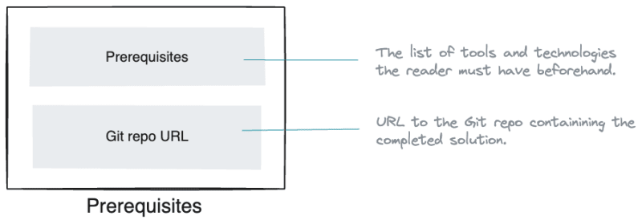

Structure of a technical tutorial
source https://dev.to/dunithd/how-to-structure-a-perfect-technical-tutorial-21h9

Introduction - Essential summary of the tutorial
Introduces the tutorial and briefly explains what to expect in the content.
The hook and the summary are two elements you can include in the introduction to persuade the reader to continue reading the rest of the content.
- The hook: A few powerful sentences explaining why the reader should read the tutorial. In most cases, this can be the problem you are trying to solve, summarized in 2–3 sentences. The closer the hook gets to the reader's problem, the more readers continue reading.
- Summary of the article (TLDR): What can the reader expect in the tutorial? What's the outcome, and what are the takeaways?

Overview - The problem you are trying to solve with the tutorial
This is where you should describe two things in particular.
- Problem statement: What problem are you trying to solve with the tutorial? What benefits does it provide? Spend a paragraph or two mentioning these points.
- Solution architecture: How are you trying to solve the problems? What's the high-level solution architecture would look like? Mention the technology components you will use in the tutorial and highlight the data flow, connectivity, and user interactions among them.
Pick a fictitious use case and build your narrative around that. For example, to build a data pipeline from a database to a data lake, you can think of an online store use case.
Include visuals as much as possible in this section to provide more clarity to the reader. Include a high-level solutions architecture diagram capturing the tutorial scenario. That way, the reader can quickly capture what you are trying to do.

Prerequisites - What the reader must have before getting started.
You should mention what tools, technologies, and components the reader must have beforehand to complete the tutorial. Use a bulleted list to mention them.
Furthermore, if certain tools are specific to a platform, highlight them as well.
Finished code repo: Help readers by pushing the completed solution code into a public Git repo and sharing its link

Lab - Step-by-step instructions
This is where you provide step-by-step, Detailed guidance on each stage of the process or task.
Be sure to provide clear instructions in the order of their dependency. Add screenshots and diagrams as needed - the more, the merrier.
After each instruction, provide the reader the means to verify whether they have executed that properly.

Validation - How should the reader verify the tutorial outcome?
Once the reader finishes following instructions, you should provide a way of verifying the end-to-end solution. You can include a screenshot or a visual portraying the final solution if the instructions were followed correctly.
Known issues and challenges: Sometimes, certain steps can't be completed due to technical challenges or limitations. Therefore, state any known issues and inform the reader about possible workarounds.
Tearing down - Cleaning up resources
Tearing down: This is an optional step where you instruct the reader to destroy the environment and clean things up.
Conclusion - Takeaways
This is where we wrap things up.
Collecting the thoughts: Reiterate what you have accomplished in the tutorial. Spend the first paragraph of the conclusion wrapping things up.
Taking it to the next level: The tutorial might have shown a thin slice of a solution that addresses a simple problem. Suggest to the reader how to extend the solution to implement a real-world solution and take it to production. You don't have to be detailed here, but highlight a few potential steps necessary as a guideline.
Call to action: Dedicate the last paragraph to insert your CTA, driving satisfied readers to your marketing funnel.

Summary
Technical tutorials can be packaged and presented in various formats, including written articles, video tutorials, interactive online courses, or a combination of these mediums.
You can use this post as a template to structure your tutorials, regardless of the format they are presented.
As a rule of thumb, try to cut your content at the 2000 word mark because attention span finite, and it isn't easy to navigate and follow a long document. Use a tutorial series if the content goes beyond 2000 words.
Conventions help shorten and clear up technical communication.
https://conventionalcomments.org/
https://www.conventionalcommits.org/en/v1.0.0/
https://martinfowler.com/articles/ship-show-ask.html
no-bundle Wasm by example
Motivation
The Rust programming language is a great contender, if you want to:
- to build webassembly/JavaScript apps for the web or
- target some specific module that need speeding, memory safety, or both.
However, most Rust-wasm tutorials, lean heavily on "NPM and webpack", just to get a "hello world".
The following pages brings under one location all those bits and pieces you want to know in order to understand and build wasm stuff with Rust.
More specifically the intent is to address these wishes:
- Rust developers should be able to produce WebAssembly packages for use in JavaScript without requiring a Node.js development environment
- JavaScript developers should be able to use WebAssembly without requiring a Rust development environment
source: [Hello wasm-pack!]
Objectives
Webassembly is still a moving target and some tools and convenient crates make the experience more appealing.
- Learn how to transform most Rust/wasm tutorials into lean no-bloat rust-wasm with no-bundle.
- Get familliar with the following tools and crates:
Methodology
We'll convert each examples from the [wasm-bindgen guide] to a no-bundle version. For each example or demo:
- we'll get the example running.
- we'll expose or highlight aspects of the code related to wasm-bindgen, wasm-pack or Rust.
0. Get wasm-pack and something to serve our website locally
Let's prepare our workspace, and setup our tools.
0.1 Install wasm-pack
cargo install wasm-pack
wasm-pack helps you build rust-generated WebAssembly packages Its a useful convenience that is widely used by the Rust community.
If your interested see [wasm-pack under the hood]
0.2 Install a local tiny static file server
We need something to serve your website so we can test and see what we develop on our local machine.
If you don't have one installed you can use Host These Things Please - a basic http server
for hosting a folder fast and simply [http]
cargo install https
Note:
[trunkrs.dev] is getting traction in the Rust community but its a much more ambitious tool and beyond our needs here.
Formula for Converting examples
Seven steps to hello world
- Set up your file structure
- Edit Cargo.toml: Set the crate-type and add wasm-bindgen as a dependency.
- Get the lib.rs code for hello_world
- Specify type module in index.html
- import with file extension included and Wrap the code in async/await index.js
- build with wasm-pack
- Run the web server and open your browser
Let's see that in practice with the first example: wasm Hello world
Hello, World!
This is the "Hello, world!" example of #[wasm_bindgen] showing how to set up a project, export a function to JS, call it from JS, and then call the alert function in Rust.
[wasm-bindgen example]
PART I. Make it run
Converting Examples in 7 steps
1. Set up your file structure
cargo new hello_world --lib
cd hello_world
mkdir -p www/html www/js
You should have this file structure
.
├── Cargo.toml
├── src
│ └── lib.rs
└── www
├── html
└── js
2. Edit Cargo.toml: Set the crate-type and add wasm-bindgen as a dependency.
In Cargo.toml, put crate-type = ["cdylib"] after edition entry.
And add wasm-bindgen as a dependency.
[package]
name = "hello_world"
version = "0.1.0"
edition = "2021"
[lib]
crate-type = ["cdylib"]
# See more keys and their definitions at https://doc.rust-lang.org/cargo/reference/manifest.html
[dependencies]
wasm-bindgen = "0.2.88"
Note:
wasm-bindgen-cli will be installed
when we build with wasm-pack the first time,
so we are all good to go.
3. Get the lib.rs code for hello_world
We'll cut and paste and modify the examples. The point is to get used to convert code meant to be deployed with NPM-Webpack ecosystem into a play vanilla no-bundle Rust wasm code.
#![allow(unused)] fn main() { // src/lib.rs use wasm_bindgen::prelude::*; #[wasm_bindgen] extern "C" { fn alert(s: &str); } #[wasm_bindgen] pub fn greet(name: &str) { alert(&format!("Hello, {}!", name)); } }
4. Specify type module in index.html
Here is the first difference.
Our index file at www/html/index.html look like this:
<!DOCTYPE html>
<html>
<head>
<meta charset="UTF-8">
<title>Wasm no NPM no Webpack</title>
<link rel="stylesheet" href="../css/styles.css">
</head>
<body>
<script type="module" src="../js/index.js"></script>
</body>
</html>
Note the type="module"
5. import with file extension included and Wrap the code in async/await index.js
Second difference.
Our full index.js is modified to look like this:
import init, { greet } from "../pkg/hello_world.js";
async function run() {
const wasm = await init();
greet('World');
}
run();
6. build with wasm-pack
wasm-pack build --target web --no-typescript --out-dir www/pkg
--target webto specify nobundle and generate Es6 glue code--no-typescriptwe are not using TypeScript for these examples--out-dir www/pkgby defaultpkgis at the same level as thesrcdirectory. Its cleaner to have all our web stuff inwww.
wasm-pack through wasm-bindgen-cli will generate the following in our pkg directory.
└── pkg
├── hello_world_bg.wasm # Wasm bytecode
├── hello_world.js # JavaScript module to import (ESM)
└── package.json
The output of --target web is included as an ES module.
Thats why we endup with an ES6 flavor of JavaScript.
7. Run the web server and open your browser
You can use any file server, or follow along with http which we installed after wasm-pack.
You can host locally the www directory with http www.
It defaults at http://127.0.0.1:8000
You can pass the address and port number like this:
http -a 127.0.0.1 -p 8080 www
Specifying our directory www will expose the following file structure to our server
www
├── html
│ └── index.html
├── js
│ └── index.js
└── pkg
├── hello_world_bg.wasm
├── hello_world.js
└── package.json
Open index.html in a browser by pointing at [http://127.0.0.1:8080/html/]

Q&A
file structure?
.
├── Cargo.toml
├── src
│ └── lib.rs
└── www
├── html
└── js
cargo new hello_world --libcd hello_world
mkdir -p www/html www/js
--target web --no-typescript --out-dir www/pkg
- ` --target web` generate Es6 glue code - `--no-typescript` We're not using Ts - `--out-dir www/pkg` by default `pkg` is at the same level as the `src` directory
PART II. Understand the Code
The following is heavily indebted to MDN's Compiling from Rust to WebAssembly{target="_blank"}
Using wasm-bindgen to communicate between Rust and JavaScript
The lib.rs file
wasm-pack uses wasm-bindgen, to provide a bridge between the types of JavaScript and Rust.
It allows JavaScript to call a Rust API with a string, or a Rust function to catch a JavaScript exception.
"The src/lib.rs file is the root of the Rust crate that we are compiling to WebAssembly. It uses wasm-bindgen to interface with JavaScript.
In this example, it imports the window.alert JavaScript function, and exports the greet Rust function, which alerts a greeting message."
externtells Rust that we want to call some externally defined functions.#[wasm-bindgen]on top of it knows how to find these functions for us in JavaScript. in this case it will glue window.alert() from the browser's JavaScript to the Rust function header that provides us a function signature Rust can understand.
Whenever you want to call JavaScript functions, you can add them to this file in this manner, and wasm-bindgen takes care of setting everything up for you.
#![allow(unused)] fn main() { // src/lib.rs // To crate to communicate between Rust and JavaScript use wasm_bindgen::prelude::*; // Calling external functions in JavaScript from Rust #[wasm_bindgen] extern "C" { fn alert(s: &str); } // Producing Rust functions that JavaScript can call #[wasm_bindgen] pub fn greet(name: &str) { alert(&format!("Hello, {}!", name)); //call alert function we asked for in the extern block above } }
To expose public Rust function to the browsers' runtime and allow calls from JavaScript,
use the #[wasm_bindgen] attribute by placing it over the pub fn block.
#![allow(unused)] fn main() { // Producing Rust functions that JavaScript can call #[wasm_bindgen] pub fn greet(name: &str) { ... }
It's the opposite of extern. We are exposing greet to Javascript so it can be used in "*.js" files.
This function is named greet, and takes one argument, a string (written &str), name. It then calls the alert function we asked for in the extern block above.
We use the format! macro to concatenate two string-literal and convert in to a String slices &
So the alert in greet calls the alert in the extern block,
which is glued to window.alert in the browser runtime.
For the curious, have a look at Design of wasm-bindgen{target="_blank"}
index.html and index.js files
- index.html
import declarations in JavaScript can only be present in modules, so our html must specify that our index.js
file is a module.
<script type="module" src="../js/index.js"></script>
- index.js
As you recall, to specify that we are not using NPM and a bundler, we used `wasm-pack --target web to compile our code, Without NPM in mind. The build will produce ES6 code.
--out-dir www/pkg is used to have wasm-pack output its glue code in www/pkg
because its nice to have all non Rust related files in a specific place such as www.
We are not using typescript for our examples so --no-typescript will
prevent the production of *.ts files in pkg.
We must used ES module import syntax, since we are working with Es6 code.
Hence importing modules in our javascript files must come with its extension .js in our import statement:
import ... from "../pkg/hello_world.js";
Where did this hello_world from?
wasm-pack gets the name from our crate name as specified in Cargo.toml
[package]
name = "hello_world"
...
and produces its JavaScript glue code with the same name.
The import line
init()
There is an initialization function init which
will "boot" the module and make it ready to use.
We must import this provided default init function.
import init, ... from "../pkg/hello_world.js";
The init() function will load the .wasm binary that is in www/pkg
The exported Rust function
Next we import the greet function, which we made public in our Rust code
and accessible in our JavaScript with #[wasm_bindgen]
import init, {greet} from "../pkg/hello_world.js";
Running our code
Finally, we need to wrap the code in an async/await function.
Using async/await, greet will not be called until init() finishes loading the Wasm
that greet("World") needs to run.
Here again is the full listing:
import init, { greet } from "../pkg/hello_world.js";
async function run() {
const wasm = await init();
greet('World');
}
run();
console.log
This example shows off how to use console.log in a variety of ways, all the way from bare-bones usage to a println!-like macro with web_sys.
_ wasm-bindgen Guide{target="_blank"}
wasm-bindgen example{target="_blank"}
PART I. Make it run
Converting Examples in 7 steps
1. Set up your file structure
cargo new console_log --lib
cd console_log
mkdir -p www/html www/js
2. Edit Cargo.toml, add crate-type and wasm-bindgen dependency
[package]
name = "console_log"
version = "0.1.0"
edition = "2021"
[lib]
crate-type = ["cdylib"]
[dependencies]
wasm-bindgen = "0.2.88"
3. get the code
Cut and paste the console-log example src/lib.rs{target="_blank"}
#![allow(unused)] fn main() { // src/lib.rs use wasm_bindgen::prelude::*; #[wasm_bindgen(start)] fn run() { bare_bones(); using_a_macro(); using_web_sys(); } // First up let's take a look of binding `console.log` manually, without the // help of `web_sys`. Here we're writing the `#[wasm_bindgen]` annotations // manually ourselves, and the correctness of our program relies on the // correctness of these annotations! #[wasm_bindgen] extern "C" { // Use `js_namespace` here to bind `console.log(..)` instead of just // `log(..)` #[wasm_bindgen(js_namespace = console)] fn log(s: &str); // The `console.log` is quite polymorphic, so we can bind it with multiple // signatures. Note that we need to use `js_name` to ensure we always call // `log` in JS. #[wasm_bindgen(js_namespace = console, js_name = log)] fn log_u32(a: u32); // Multiple arguments too! #[wasm_bindgen(js_namespace = console, js_name = log)] fn log_many(a: &str, b: &str); } fn bare_bones() { log("Hello from Rust!"); log_u32(42); log_many("Logging", "many values!"); } // Next let's define a macro that's like `println!`, only it works for // `console.log`. Note that `println!` doesn't actually work on the wasm target // because the standard library currently just eats all output. To get // `println!`-like behavior in your app you'll likely want a macro like this. macro_rules! console_log { // Note that this is using the `log` function imported above during // `bare_bones` ($($t:tt)*) => (log(&format_args!($($t)*).to_string())) } fn using_a_macro() { console_log!("Hello {}!", "world"); console_log!("Let's print some numbers..."); console_log!("1 + 3 = {}", 1 + 3); } // And finally, we don't even have to define the `log` function ourselves! The // `web_sys` crate already has it defined for us. fn using_web_sys() { use web_sys::console; console::log_1(&"Hello using web-sys".into()); let js: JsValue = 4.into(); console::log_2(&"Logging arbitrary values looks like".into(), &js); } }
Note:
Since use web_sys::console; brings into scope console from the web-sys crate we need to
declare it in our Cargo dependencies.
...
[dependencies]
wasm-bindgen = "0.2.88"
web-sys = { version = "0.3.65", features = ['console'] }`
4. create the index file at www/html/index.html:
<!DOCTYPE html>
<html>
<head>
<meta charset="UTF-8">
<title>nobundle: console_log</title>
</head>
<body>
<script type="module" src="../js/index.js"></script>
</body>
</html>
5. The js file
We could have written the file like this
import init, { run as run_me } from "../pkg/console_log.js";
async function run() {
const wasm = await init();
run_me();
}
run();
But because we used #[wasm_bindgen(start)] in src/lib.rs
#![allow(unused)] fn main() { ... #[wasm_bindgen(start)] fn run() { bare_bones(); using_a_macro(); using_web_sys(); } ... }
our js file can run directly
import init from "../pkg/console_log.js";
async function run() {
const wasm = await init();
}
run();
6. build it
wasm-pack build --target web --no-typescript --out-dir www/pkg
7. serve it
http www
Open the browser at http://127.0.0.1:8000/html/
firefox http://localhost:8000/html/
and ctrl-shift + I to see the output in the browsers console log

Q&A
file structure?
.
├── Cargo.toml
├── src
│ └── lib.rs
└── www
├── html
└── js
cargo new hello_world --libcd hello_world
mkdir -p www/html www/js
PART II. Understand the Code
Understand the Code
What's next?
There is nothing specific for nobundle in the Small wasm files{target="_blank"} example so we'll pass it.
Now the Without a Bundler{target="_blank"} section makes sense.
Synchronous Instantiation{target="_blank"} We'll stick with the default method, asynchronously initializing a module gets all our examples running.
Converting WebAssembly to JS{target="_blank"}. Nothing specific to nobundle, we pass.
Importing non-browser JS
The #[wasm_bindgen] attribute can be used on extern "C" { .. } blocks to import functionality from JS. This is how the js-sys and the web-sys crates are built, but you can also use it in your own crate!
_ wasm-bindgen Guide{target="_blank"}
wasm-bindgen example{target="_blank"}
PART I. Make it run
Converting Examples in 7 steps
1. Make the file structure
cargo new import_js --lib
cd import_js
mkdir -p www/html www/js
2. Edit Cargo.toml, add crate-type and wasm-bindgen dependency
[package]
name = "import_js"
version = "0.1.0"
edition = "2021"
[lib]
crate-type = ["cdylib"]
[dependencies]
wasm-bindgen = "0.2.88"
3. Get the code
Cut and paste the import-js example from github src/lib.rs
or the rust code in
Note:
We need to modify `#[wasm_bindgen(module = "/defined-in-js.js")]`
as we made the commitment not to mix Rust and web code.
Our version will have `defined-in-js.js` in the `js` directory
with our `index.js` file.
#![allow(unused)] fn main() { #[wasm_bindgen(module = "/www/js/defined-in-js.js")] ... }
So the full code is :
#![allow(unused)] fn main() { // src/lib.rs use wasm_bindgen::prelude::*; // our webserver's root is www #[wasm_bindgen(module = "/www/js/defined-in-js.js")] extern "C" { fn name() -> String; type MyClass; #[wasm_bindgen(constructor)] fn new() -> MyClass; #[wasm_bindgen(method, getter)] fn number(this: &MyClass) -> u32; #[wasm_bindgen(method, setter)] fn set_number(this: &MyClass, number: u32) -> MyClass; #[wasm_bindgen(method)] fn render(this: &MyClass) -> String; } // lifted from the `console_log` example #[wasm_bindgen] extern "C" { #[wasm_bindgen(js_namespace = console)] fn log(s: &str); } #[wasm_bindgen(start)] fn run() { log(&format!("Hello from {}!", name())); // should output "Hello from Rust!" let x = MyClass::new(); assert_eq!(x.number(), 42); x.set_number(10); log(&x.render()); } }
4. create the index file at www/html/index.html:
<!DOCTYPE html>
<html>
<head>
<meta charset="UTF-8">
<title>Wasm no NPM no Webpack</title>
</head>
<body>
<script type="module" src="../js/index.js"></script>
</body>
</html>
5. The first js file is index.js
// www/js/index.js
import init from "../pkg/import_js.js";
async function run() {
const wasm = await init();
}
run();
Our second javascript file defined-in-js.js
// www/js/defined-in-js.js
export function name() {
return 'Rust';
}
export class MyClass {
constructor() {
this._number = 42;
}
get number() {
return this._number;
}
set number(n) {
return this._number = n;
}
render() {
return `My number is: ${this.number}`;
}
}
6. build it
wasm-pack build --target web --no-typescript --out-dir www/pkg
7. serve it
http www
open index.html
firefox http://localhost:8000/html/
Open the browser at http://127.0.0.1:8000/html/
and ctrl-shift + I to see the output in the browsers console log

PART II. Understand the Code
Understand the Code
#![allow(unused)] fn main() { // our webserver's root is www #[wasm_bindgen(module = "/www/js/defined-in-js.js")] extern "C" { fn name() -> String; type MyClass; #[wasm_bindgen(constructor)] fn new() -> MyClass; #[wasm_bindgen(method, getter)] fn number(this: &MyClass) -> u32; #[wasm_bindgen(method, setter)] fn set_number(this: &MyClass, number: u32) -> MyClass; #[wasm_bindgen(method)] fn render(this: &MyClass) -> String; } }
We made the commitment not to mix Rust and web code.
As such, defined-in-js.js is in the js directory with our index.jsfile.
The original code looks for this file next to the Cargo.toml file at the root directory with
#[wasm_bindgen(module = "/defined-in-js.js")]
We point it to www/js/ like this
#![allow(unused)] fn main() { #[wasm_bindgen(module = "/www/js/defined-in-js.js")] extern "C" { ... } ... }
-
module = "..."
wasm-bindgen docs: attributes{target="_blank"} -
"The #[wasm_bindgen] attribute can be used on extern "C" { .. } blocks to import functionality from JS."
wasm-bindgen docs: Importing non-browser JS{target="_blank"} -
wasm-bindgen docs: constructor{target="_blank"}
-
wasm-bindgen docs: method{target="_blank"}
-
wasm-bindgen docs: getter-and-setter{target="_blank"}
#![allow(unused)] fn main() { // lifted from the `console_log` example #[wasm_bindgen] extern "C" { #[wasm_bindgen(js_namespace = console)] fn log(s: &str); } }
Here we are making use of Javascript's console.log() method.
wasm-bindgen docs: js_namespace{target="_blank"}
#![allow(unused)] fn main() { #[wasm_bindgen(start)] fn run() { log(&format!("Hello from {}!", name())); // should output "Hello from Rust!" let x = MyClass::new(); assert_eq!(x.number(), 42); x.set_number(10); log(&x.render()); } }
- The start function here should be started up automatically when the wasm module is loaded.
wasm-bindgen docs: start{target="_blank"}
What's next?
Working with the char type
The #[wasm_bindgen] macro will convert the rust char type to a single code-point js string, and this example shows how to work with this.
Opening this example should display a single counter with a random character for it's key and 0 for its count. You can click the + button to increase a counter's count. By clicking on the "add counter" button you should see a new counter added to the list with a different random character for it's key.
Under the hood javascript is choosing a random character from an Array of characters and passing that to the rust Counter struct's constructor so the character you are seeing on the page has made the full round trip from js to rust and back to js.
_ wasm-bindgen Guide{target="_blank"}
wasm-bindgen example{target="_blank"}
PART I. Make it run
Converting Examples in 7 steps
1. Make the file structure
cargo new char --lib
cd char
mkdir -p www/html www/js
2. Edit Cargo.toml, add crate-type and wasm-bindgen dependency
[package]
name = "char"
version = "0.1.0"
edition = "2021"
[lib]
crate-type = ["cdylib"]
# See more keys and their definitions at
# https://doc.rust-lang.org/cargo/reference/manifest.html
[dependencies]
wasm-bindgen = "0.2.88"
3. Get the code
Cut and paste the import-js example from github src/lib.rs
or the rust code in
#![allow(unused)] fn main() { // src/lib.rs use wasm_bindgen::prelude::*; // lifted from the `console_log` example #[wasm_bindgen] extern "C" { #[wasm_bindgen(js_namespace = console)] fn log(s: &str); } #[derive(Debug)] #[wasm_bindgen] pub struct Counter { key: char, count: i32, } #[wasm_bindgen] impl Counter { pub fn new(key: char, count: i32) -> Counter { log(&format!("Counter::new({}, {})", key, count)); Counter { key, count } } pub fn key(&self) -> char { log("Counter.key()"); self.key } pub fn count(&self) -> i32 { log("Counter.count"); self.count } pub fn increment(&mut self) { log("Counter.increment"); self.count += 1; } pub fn update_key(&mut self, key: char) { self.key = key; } } }
Note we have the wasm_bindgen macro immediatly before our struct declaration.
#![allow(unused)] fn main() { #[derive(Debug)] #[wasm_bindgen] pub struct Counter { key: char, count: i32, } }
Having it placed as in the official example resulted in Counter not being pick up
and as a result not available in the glue code pkg/char.js which resulted in
SyntaxError: ambiguous indirect export: Counter in the browser.
// DONT DO THIS
#[wasm_bindgen] <--- wrong place
#[derive(Debug)]
pub struct Counter {
key: char,
count: i32,
}
4. create the index file at www/html/index.html:
<!DOCTYPE html>
<html>
<head>
<meta charset="UTF-8">
<title>Counter nobundle</title>
<link rel="stylesheet" href="../css/style.css"></head>
<body>
<button id="add-counter" type="button">add counter</button>
<div id="container">
</div>
<script type="module" src="../js/index.js"></script>
</body>
</html>
Let's put the stylesheet in www/css/style.css
* {
font-family: sans-serif;
font-size: 16pt;
}
h1 {
font-size: 18pt;
font-weight: bold;
margin: 0;
}
button {
padding: 5px 10px;
border: none;
background: slategrey;
margin: 10px auto;
color: white;
}
body {
width: 400px;
margin: auto;
}
#container,
.counter {
display: flex;
flex-flow: column;
justify-content: flex-start;
align-items: flex-start;
align-content: flex-start;
}
.counter {
margin-bottom: 10px;
background: steelblue;
color: white;
align-items: center;
width: 100%;
}
.field {
display: flex;
flex-flow: row;
justify-content: space-around;
width: 100%;
}
5. js files
5.1 Get char-list.js
Cut & paste char-list{target="_blank"} and save as char-list.js in www/js
export let chars = [
'!','#','$','%','&','\'','(',')','*','+',',',
'-','.','/','0','1','2','3','4','5','6','7',
'8','9',':',';','<','=','>','?','@','A','B',
'C','D','E','F','G','H','I','J','K','L','M',
'N','O','P','Q','R','S','T','U','V','W','X',
'Y','Z','[',']','^','_','`','a','b','c',
'd','e','f','g','h','i','j','k','l','m','n',
'o','p','q','r','s','t','u','v','w','x','y',
'z','{','|','}','~',' ','¡','¢','£','¤','¥',
'¦','§','¨','©','ª','«','¬','®','¯','°',
'±','²','³','´','µ','¶','·','¸','¹','º','»',
'¼','½','¾','¿','À','Á','Â','Ã','Ä','Å','Æ',
'Ç','È','É','Ê','Ë','Ì','Í','Î','Ï','Ð','Ñ',
'Ò','Ó','Ô','Õ','Ö','×','Ø','Ù','Ú','Û','Ü',
'Ý','Þ','ß','à','á','â','ã','ä','å','æ','ç',
'è','é','ê','ë','ì','í','î','ï','ð','ñ','ò',
'ó','ô','õ','ö','÷','ø','ù','ú','û','ü','ý',
'þ','ÿ','Ā','ā','Ă','ă','Ą','ą','Ć','ć','Ĉ',
'ĉ','Ċ','ċ','Č','č','Ď','ď','Đ','đ','Ē','ē',
'Ĕ','ĕ','Ė','ė','Ę','ę','Ě','ě','Ĝ','ĝ','Ğ',
'ğ','Ġ','ġ','Ģ','ģ','Ĥ','ĥ','Ħ','ħ','Ĩ','ĩ',
'Ī','ī','Ĭ','ĭ','Į','į','İ','ı','IJ','ij','Ĵ',
'ĵ','Ķ','ķ','ĸ','Ĺ','ĺ','Ļ','ļ','Ľ','ľ','Ŀ',
'ŀ','Ł','ł','Ń','ń','Ņ','ņ','Ň','ň','ʼn','Ŋ',
'ŋ','Ō','ō','Ŏ','ŏ','Ő','ő','Œ','œ','Ŕ','ŕ',
'Ŗ','ŗ','Ř','ř','Ś','ś','Ŝ','ŝ','Ş','ş','Š',
'š','Ţ','ţ','Ť','ť','Ŧ','ŧ','Ũ','ũ','Ū','ū',
'Ŭ','ŭ','Ů','ů','Ű','ű','Ų','ų','Ŵ','ŵ','Ŷ',
'ŷ','Ÿ','Ź','ź','Ż','ż','Ž','ž','ſ','ƀ','Ɓ',
'Ƃ','ƃ','Ƅ','ƅ','Ɔ','Ƈ','ƈ','Ɖ','Ɗ','Ƌ','ƌ',
'ƍ','Ǝ','Ə','Ɛ','Ƒ','ƒ','Ɠ','Ɣ','ƕ','Ɩ','Ɨ',
'Ƙ','ƙ','ƚ','ƛ','Ɯ','Ɲ','ƞ','Ɵ','Ơ','ơ','Ƣ',
'ƣ','Ƥ','ƥ','Ʀ','Ƨ','ƨ','Ʃ','ƪ','ƫ','Ƭ','ƭ',
'Ʈ','Ư','ư','Ʊ','Ʋ','Ƴ','ƴ','Ƶ','ƶ','Ʒ','Ƹ',
'ƹ','ƺ','ƻ','Ƽ','ƽ','ƾ','ƿ','ǀ','ǁ','ǂ','ǃ',
'DŽ','Dž','dž','LJ','Lj','lj','NJ','Nj','nj','Ǎ','ǎ',
'Ǐ','ǐ','Ǒ','ǒ','Ǔ','ǔ','Ǖ','ǖ','Ǘ','ǘ','Ǚ',
'ǚ','Ǜ','ǜ','ǝ','Ǟ','ǟ','Ǡ','ǡ','Ǣ','ǣ','Ǥ',
'ǥ','Ǧ','ǧ','Ǩ','ǩ','Ǫ','ǫ','Ǭ','ǭ','Ǯ','ǯ',
'ǰ','DZ','Dz','dz','Ǵ','ǵ','Ƕ','Ƿ','Ǹ','ǹ','Ǻ',
'ǻ','Ǽ','ǽ','Ǿ','ǿ','Ȁ','ȁ','Ȃ','ȃ','Ȅ','ȅ',
'Ȇ','ȇ','Ȉ','ȉ','Ȋ','ȋ','Ȍ','ȍ','Ȏ','ȏ','Ȑ',
'ȑ','Ȓ','ȓ','Ȕ','ȕ','Ȗ','ȗ','Ș','ș','Ț','ț',
'Ȝ','ȝ','Ȟ','ȟ','Ƞ','ȡ','Ȣ','ȣ','Ȥ','ȥ','Ȧ',
'ȧ','Ȩ','ȩ','Ȫ','ȫ','Ȭ','ȭ','Ȯ','ȯ','Ȱ','ȱ',
'Ȳ','ȳ','ȴ','ȵ','ȶ','ȷ','ȸ','ȹ','Ⱥ','Ȼ','ȼ',
'Ƚ','Ⱦ','ȿ','ɀ','Ɂ','ɂ','Ƀ','Ʉ','Ʌ','Ɇ','ɇ',
'Ɉ','ɉ','Ɋ','ɋ','Ɍ','ɍ','Ɏ','ɏ','ɐ','ɑ','ɒ',
'ɓ','ɔ','ɕ','ɖ','ɗ','ɘ','ə','ɚ','ɛ','ɜ','ɝ',
'ɞ','ɟ','ɠ','ɡ','ɢ','ɣ','ɤ','ɥ','ɦ','ɧ','ɨ',
'ɩ','ɪ','ɫ','ɬ','ɭ','ɮ','ɯ','ɰ','ɱ','ɲ','ɳ',
'ɴ','ɵ','ɶ','ɷ','ɸ','ɹ','ɺ','ɻ','ɼ','ɽ','ɾ',
'ɿ','ʀ','ʁ','ʂ','ʃ','ʄ','ʅ','ʆ','ʇ','ʈ','ʉ',
'ʊ','ʋ','ʌ','ʍ','ʎ','ʏ','ʐ','ʑ','ʒ','ʓ','ʔ',
'ʕ','ʖ','ʗ','ʘ','ʙ','ʚ','ʛ','ʜ','ʝ','ʞ','ʟ',
'ʠ','ʡ','ʢ','ʣ','ʤ','ʥ','ʦ','ʧ','ʨ','ʩ','ʪ',
'ʫ','ʬ','ʭ','ʮ','ʯ','Ͳ','ͳ','ʹ','͵','Ͷ','ͷ',
'ͺ','ͻ','ͼ','ͽ',';','Ϳ','΄','΅','Ά','·','Έ','Ή',
'Ί','Ό','Ύ','Ώ',
'ΐ','Α','Β','Γ','Δ','Ε','Ζ','Η','Θ','Ι','Κ',
'Λ','Μ','Ν','Ξ','Ο','Π','Ρ','Σ','Τ','Υ','Φ',
'Χ','Ψ','Ω','Ϊ','Ϋ','ά','έ','ή','ί','ΰ','α',
'β','γ','δ','ε','ζ','η','θ','ι','κ','λ','μ',
'ν','ξ','ο','π','ρ','ς','σ','τ','υ','φ','χ',
'ψ','ω','ϊ','ϋ','ό','ύ','ώ','Ϗ','ϐ','ϑ','ϒ',
'ϓ','ϔ','ϕ','ϖ','ϗ','Ϙ','ϙ','Ϛ','ϛ','Ϝ','ϝ',
'Ϟ','ϟ','Ϡ','ϡ','Ϣ','ϣ','Ϥ','ϥ','Ϧ','ϧ','Ϩ',
'ϩ','Ϫ','ϫ','Ϭ','ϭ','Ϯ','ϯ','ϰ','ϱ','ϲ','ϳ',
'Օ','Ֆ','🕧','🕨','🕩','🕪','🕫','🕬','🕭','🕮',
'🕯','🕰','🕱','🕲','🕳','🕴','🕵','🕶','🕷','🕸',
'🕹','🕺','🕻','🕼','🕽','🕾','🕿','🖀','🖁','🖂',
'🖃','🖄','🖅','🖆','🖇','🖈','🖉','🖊','🖋',
'🖌','🖍','🖎','🖏','🖐','🖑','🖒','🖓','🖔','🖕',
'🖖','🖗','🖘','🖙','🖚','🖛','🖜','🖝','🖞','🖟',
'🖠','🖡','🖢','🖣','🖤','🖥','🖦','🖧','🖨','🖩',
'🖪','🖫','🖬','🖭','🖮','🖯','🖰','🖱','🖲','🖳',
'🖴','🖵','🖶','🖷','🖸','🖹','🖺','🖻','🖼','🖽',
'🖾','🖿','🗀','🗁','🗂','🗃','🗄','🗅','🗆','🗇',
'🗈','🗉','🗊','🗋','🗌','🗍','🗎','🗏','🗐','🗑','🗒',
'🗓','🗔','🗕','🗖','🗗','🗘','🗙','🗚','🗛','🗜',
'🗝','🗞','🗟','🗠','🗡','🗢','🗣','🗤','🗥','🗦',
'🗧','🗨','🗩','🗪','🗫','🗬','🗭','🗮','🗯','🗰',
'🗱','🗲','🗳','🗴','🗵','🗶','🗷','🗸','🗹','🗺',
'🗻','🗼','🗽','🗾','🗿','😀'];
5.2 index.js: Some modification required
Cut and paste the code{target="_blank"} to index.js.
5.5.2.1 imports
This
/* eslint-disable no-unused-vars */
import { chars } from './chars-list.js';
let imp = import('./pkg');
let mod;
becomes
// www/js/index.js
import init, { Counter } from "../pkg/char.js";
import { chars } from './chars-list.js';
We don't need the imp as we get our wasm code from init()
and we don't need mod since we import Counter from the glue code.
Finally this:
let counters = [];
imp
.then(wasm => {
mod = wasm;
addCounter();
let b = document.getElementById('add-counter');
if (!b) throw new Error('Unable to find #add-counter');
b.addEventListener('click', ev => addCounter());
})
.catch(console.error);
becomes this
let counters = [];
async function run() {
const wasm = await init();
addCounter();
let b = document.getElementById('add-counter');
alert("b");
if (!b) throw new Error('Unable to find #add-counter');
b.addEventListener('click', ev => addCounter());
}//^-- async run
run();
And Counter is directly accessible by the other functions so we drop the mod.Counter
function addCounter() {
let ctr = Counter.new(randomChar(), 0);
So the final code is:
// www/js/index.js
import init, { Counter } from "../pkg/char.js";
import { chars } from './chars-list.js';
let counters = [];
async function run() {
const wasm = await init();
addCounter();
let b = document.getElementById('add-counter');
alert("b");
if (!b) throw new Error('Unable to find #add-counter');
b.addEventListener('click', ev => addCounter());
}//^-- async run
run();
function addCounter() {
let ctr = Counter.new(randomChar(), 0);
counters.push(ctr);
update();
console.log("in addCounter");
}
function update() {
let container = document.getElementById('container');
if (!container) throw new Error('Unable to find #container in dom');
while (container.hasChildNodes()) {
if (container.lastChild.id == 'add-counter') break;
container.removeChild(container.lastChild);
}
for (var i = 0; i < counters.length; i++) {
let counter = counters[i];
container.appendChild(newCounter(counter.key(), counter.count(), ev => {
counter.increment();
update();
}));
}
}
function randomChar() {
console.log('randomChar');
let idx = Math.floor(Math.random() * (chars.length - 1));
console.log('index', idx);
let ret = chars.splice(idx, 1)[0];
console.log('char', ret);
return ret;
}
function newCounter(key, value, cb) {
let container = document.createElement('div');
container.setAttribute('class', 'counter');
let title = document.createElement('h1');
title.appendChild(document.createTextNode('Counter ' + key));
container.appendChild(title);
container.appendChild(newField('Count', value));
let plus = document.createElement('button');
plus.setAttribute('type', 'button');
plus.setAttribute('class', 'plus-button');
plus.appendChild(document.createTextNode('+'));
plus.addEventListener('click', cb);
container.appendChild(plus);
return container;
}
function newField(key, value) {
let ret = document.createElement('div');
ret.setAttribute('class', 'field');
let name = document.createElement('span');
name.setAttribute('class', 'name');
name.appendChild(document.createTextNode(key));
ret.appendChild(name);
let val = document.createElement('span');
val.setAttribute('class', 'value');
val.appendChild(document.createTextNode(value));
ret.appendChild(val);
return ret;
}
6. build it
wasm-pack build --target web --no-typescript --out-dir www/pkg
7. serve it
http www
open index.html
firefox http://localhost:8000/html/

PART II. Understand the Code
Understand the Code
- #[wasm_bindgen]
#![allow(unused)] fn main() { // src/lib.rs #[wasm_bindgen] pub struct Counter { key: char, count: i32, } #[wasm_bindgen] impl Counter { pub fn new(key: char, count: i32) -> Counter { log(&format!("Counter::new({}, {})", key, count)); Counter { key, count } } ... }
#[wasm_bindgen] makes it possible to use a public Counter & public new() from Javascript
// www/js/index.js
import init, { Counter } from "../pkg/char.js";
// ...
function addCounter() {
let ctr = Counter.new(randomChar(), 0);
counters.push(ctr);
update();
console.log("in addCounter");
}
- async function
The async function declaration creates a binding of a new async function to a given name. The await keyword is permitted within the function body, enabling asynchronous, promise-based behavior to be written in a cleaner style and avoiding the need to explicitly configure promise chains. _ MDN: async function{target="_blank"}
- await
Async functions can contain zero or more await expressions. Await expressions make promise-returning functions behave as though they're synchronous by suspending execution until the returned promise is fulfilled or rejected. The resolved value of the promise is treated as the return value of the await expression. MDN: async function{target="_blank"}
async function run() {
const wasm = await init();
addCounter();
let b = document.getElementById('add-counter');
alert("b");
if (!b) throw new Error('Unable to find #add-counter');
b.addEventListener('click', ev => addCounter());
}//^-- async run
run();
- init()
wasm-bindgen: Support init function without parameters #1559
This issue opened by ibaryshnikov lead to our current await init()
When used without a bundler, there is a need to call init with a .wasm file name:
await init('../pkg/my_project_bg.wasm');
//
await init('../pkg/another_project_bg.wasm');
Proposed Solution
Make it possible to use
await init();
which will default to path with generated .wasm file
@ibaryshnikov mentioned this issue Jun 7, 2019
added default module path inside init function when target is web #1579
alexcrichton closed this as completed in #1579 on Jun 10, 2019
What's next?
js-sys: WebAssembly in WebAssembly
Using the js-sys crate we can instantiate WebAssembly modules from inside WebAssembly modules!
_ wasm-bindgen Guide{target="_blank"}
wasm-bindgen example{target="_blank"}
PART I. Make it run
Converting wasm in wasm example
1. file structure & crate type
cargo new wasm-in-wasm --lib
cd wasm-in-wasm
cargo add wasm-bindgen
edit Cargo.toml to add crate-type
[lib]
crate-type = ["cdylib",]
2. make the wasm file to be used by wasm-in-wasm later
We want to use webassembly in our rust code.
First we shall generate a wasm file called add.wasm
// temporary src/lib.rs to generate our add.wasm file
use wasm_bindgen::prelude::wasm_bindgen;
#[wasm_bindgen]
pub fn add(a: usize, b: usize) -> usize {
a + b
}
Build the wasm file with the out-name set to add
wasm-pack build --release --target web --out-name add --out-dir www/pkg
Since this wasm file is on the "server side", move it and rename from
www/pkg/add_bg.wasm to src/add.wasm
and clean the project for our real code
mv target/wasm32-unknown-unknown/release/add_bg.wasm ./src/add.wasm
cargo clean
'rm -fr www/pkg'
3. Html and Js files
In www/html/index.html we have
<!DOCTYPE html>
<html>
<head>
<meta content="text/html;charset=utf-8" http-equiv="Content-Type"/>
<title>Using wasm in Rust</title>
</head>
<body>
<p>Everything happens in rust/wasm <br/ >
The developer console should have messages in it</p>
<script type="module" src="../js/index.js"></script>
</body>
</html>
and in www/js/index.js
import init from "../pkg/wasm_in_wasm.js"
init();
/*
//async is handled directly in lib.rs
async function run() {
const wasm = await init();
}
run();
*/
Note:
The build outputs the file is wasm_in_wasm.js not wasm-in-wasm.js
we've seen that before (ie: the crate wasm-bindgen is used as wasm_bindgen)
4. Everything happens in src
First, we need to add the two new crates js-sys and wasm-bindgen-futures
cargo add js-sys
cargo add wasm-bindgen-futures
we bring them into scope in lib.rs
#![allow(unused)] fn main() { // src/lib.rs use js_sys::{Function, Object, Reflect, WebAssembly}; use wasm_bindgen::prelude::*; use wasm_bindgen_futures::{spawn_local, JsFuture}; // lifted from the `console_log` example #[wasm_bindgen] extern "C" { #[wasm_bindgen(js_namespace = console)] fn log(a: &str); } macro_rules! console_log { ($($t:tt)*) => (log(&format_args!($($t)*).to_string())) } const WASM: &[u8] = include_bytes!("add.wasm"); // path relative to lib.rs async fn run_async() -> Result<(), JsValue> { console_log!("instantiating a new wasm module directly"); let a = JsFuture::from(WebAssembly::instantiate_buffer(WASM, &Object::new())).await?; let b: WebAssembly::Instance = Reflect::get(&a, &"instance".into())?.dyn_into()?; let c = b.exports(); let add = Reflect::get(c.as_ref(), &"add".into())? .dyn_into::<Function>() .expect("add export wasn't a function"); let three = add.call2(&JsValue::undefined(), &1.into(), &2.into())?; console_log!("1 + 2 = {:?}", three); let mem = Reflect::get(c.as_ref(), &"memory".into())? .dyn_into::<WebAssembly::Memory>() .expect("memory export wasn't a `WebAssembly.Memory`"); console_log!("created module has {} pages of memory", mem.grow(0)); console_log!("giving the module 4 more pages of memory"); mem.grow(4); console_log!("now the module has {} pages of memory", mem.grow(0)); Ok(()) } #[wasm_bindgen(start)] fn run() { spawn_local(async { run_async().await.unwrap_throw(); }); } }
5. build and serve
wasm-pack build --target web --no-typescript --out-dir www/pkg
http www
open index.html
firefox http://localhost:8000/html/

PART II. Understand the Code
Understand the Code
#![allow(unused)] fn main() { use js_sys::{Function, Object, Reflect, WebAssembly}; }
Struct js_sys::Function{target="_blank"}
Struct js_sys::Object{target="_blank"}
Module js_sys::Reflect{target="_blank"}
Module js_sys::WebAssembly{target="_blank"}
#![allow(unused)] fn main() { use wasm_bindgen::prelude::wasm_bindgen; #[wasm_bindgen] pub fn add(a: usize, b: usize) -> usize { a + b } }
The add.wasm would typically be used in a js file
since we made it available #[wasm_bindgen].
But this time we are going to use it directly in our Rust code.
#![allow(unused)] fn main() { const WASM: &[u8] = include_bytes!("add.wasm"); // path relative to lib.rs }
Remember add.wasm is a binary.
WebAssembly::instantiate_buffer(WASM, &Object::new())
- JsFuture & WebAssembly::instantiate_buffer
#![allow(unused)] fn main() { let a = JsFuture::from(WebAssembly::instantiate_buffer(WASM, &Object::new())).await?; }
wikipedia: Futures_and_promises{target="_blank"}
- WebAssembly::Instance & Reflect
#![allow(unused)] fn main() { let b: WebAssembly::Instance = Reflect::get(&a, &"instance".into())?.dyn_into()?; }
- WebAssembly::Instance & .exports()
#![allow(unused)] fn main() { let c = b.exports(); }
- dyn_into::<>
#![allow(unused)] fn main() { let add = Reflect::get(c.as_ref(), &"add".into())? .dyn_into::<Function>() .expect("add export wasn't a function"); }
- Struct js_sys::Function & call2()
#![allow(unused)] fn main() { let three = add.call2(&JsValue::undefined(), &1.into(), &2.into())?; }
- js-sys WebAssembly::Memory & .grow()
#![allow(unused)] fn main() { let mem = Reflect::get(c.as_ref(), &"memory".into())? .dyn_into::<WebAssembly::Memory>() .expect("memory export wasn't a `WebAssembly.Memory`"); }
grow memory
#![allow(unused)] fn main() { console_log!("created module has {} pages of memory", mem.grow(0)); console_log!("giving the module 4 more pages of memory"); mem.grow(4); console_log!("now the module has {} pages of memory", mem.grow(0)); }
- spanw_local
#![allow(unused)] fn main() { #[wasm_bindgen(start)] fn run() { spawn_local(async { run_async().await.unwrap_throw(); }); } }
Q&A
What's next?
web-sys: DOM hello world
Using web-sys we're able to interact with all the standard web platform methods, including those of the DOM! Here we take a look at a simple "Hello, world!" which manufactures a DOM element in Rust, customizes it, and then appends it to the page.
_ wasm-bindgen Guide{target="_blank"}
wasm-bindgen DOM example{target="_blank"}
setup the project
cargo new dom --lib
cd dom
mkdir -p www/js www/html
cargo add wasm-bindgen
edit Cargo.toml to add crate-type
[lib]
crate-type = ["cdylib",]
in www/html/index.html we have
<!DOCTYPE html>
<html>
<head>
<meta content="text/html;charset=utf-8" http-equiv="Content-Type"/>
<title>DOM nobundle</title>
</head>
<body>
<script type="module" src="../js/index.js"></script>
</body>
</html>
and in www/js/index.js
import init from "../pkg/dom.js"
async function run() {
const wasm = await init();
}
run();
Everything happens in src
#![allow(unused)] fn main() { // src/lib.rs use wasm_bindgen::prelude::*; // Called by our JS entry point to run the example #[wasm_bindgen(start)] fn run() -> Result<(), JsValue> { // Use `web_sys`'s global `window` function to get a handle on the global // window object. let window = web_sys::window().expect("no global `window` exists"); let document = window.document().expect("should have a document on window"); let body = document.body().expect("document should have a body"); // Manufacture the element we're gonna append let val = document.create_element("p")?; val.set_text_content(Some("Hello from Rust!")); body.append_child(&val)?; Ok(()) } }
Note:
We need to add web-sys as a dependency and make some features available in Cargo.toml.
[dependencies]
wasm-bindgen = "0.2.88"
[dependencies.web-sys]
version = "0.3.65"
features = [
'Document',
'Element',
'HtmlElement',
'Node',
'Window',
]
build and serve
wasm-pack build --target web --no-typescript --out-dir www/pkg
http www
open index.html
firefox http://localhost:8000/html/
What's next?
Next example: web-sys: Closures -->
web-sys: Closures
One of the features of #[wasm_bindgen] is that you can pass closures defined in Rust off to JS. This can be a bit tricky at times, though, so the example here shows how to interact with some standard web APIs with closures.
_ wasm-bindgen Guide{target="_blank"}
Simple example using the gloo crate
We start with our own example using a helper crate gloo, before diving into the harder official example
...
[lib]
crate-type = ["cdylib"]
[dependencies]
gloo = "0.11.0"
js-sys = "0.3.67"
wasm-bindgen = "0.2.90"
[dependencies.web-sys]
version = "0.3.67"
features = [
'Document',
'Element',
'HtmlElement',
'HtmlParagraphElement',
'HtmlSelectElement',
'HtmlOptionsCollection',
'Node',
'Window',
'console',
]
#![allow(unused)] fn main() { // src/lib.rs use gloo::events::EventListener; use wasm_bindgen::prelude::*; use wasm_bindgen::JsCast; #[wasm_bindgen(start)] pub fn start() { select_country_on_click(); } pub fn select_country_on_click() { let window = web_sys::window().expect("global window does not exists"); let document = window.document().expect("expecting a document on window"); let body = document .body() .expect("document expect to have have a body"); let paragraph1= document .get_element_by_id("message") .unwrap() .dyn_into::<web_sys::HtmlParagraphElement>() .unwrap(); let paragraph1_hello = paragraph1.clone(); let select_country = document.get_element_by_id("countries") .unwrap() .dyn_into::<web_sys::HtmlSelectElement>() .unwrap(); let select_country_hello = select_country.clone(); let mut index = 0; let on_click = EventListener::new(&select_country, "click", move |_event| { web_sys::console::log_2(&"Hello World Gloo :%s".into(), &"Select country".into()); index = select_country_hello.selected_index(); paragraph_hello.set_text_content(Some(&index.to_string())); }); on_click.forget(); body.append_child(¶graph).unwrap(); } }
import init from "../pkg/closures.js"
async function run() {
const wasm = await init();
}
run();
<!DOCTYPE html>
<html>
<head>
<meta content="text/html;charset=utf-8" http-equiv="Content-Type"/>
<title>Closures: nobundle</title>
<style>
body {
display: grid;
justify-content: center;
align-items: center;
height: 100vh;
}
</style>
</head>
<body>
<select id="countries" name="countries">
<option value="KE">Kenya</option>
<option value="MG">Madagascar</option>
<option value="UY">Uruguay</option>
<option value="UZ">Uzbekistan</option>
<option value="VU">Vanuatu</option>
<option value="ZM">Zambia</option>
<option value="ZW">Zimbabwe</option>
</select>
<p id="message"></p>
<script type="module" src="../js/index.js"></script>
</body>
</html>
build and serve
wasm-pack build --target web --no-typescript --out-dir www/pkg
http www
open index.html
firefox http://localhost:8000/html/
And now the official example:
web-sys: Closures example{target="_blank"}
setup the project
cargo new closures --lib
cd closures
mkdir -p www/js www/html
cargo add wasm-bindgen js-sys web-sys
edit Cargo.toml to add crate-type
[lib]
crate-type = ["cdylib",]
web-sys as a dependecy
In Cargo.toml change the web-sys entry
web-sys = "0.3.65"
to
[dependencies.web-sys]
version = "0.3.65"
features = [
'CssStyleDeclaration',
'Document',
'Element',
'HtmlElement',
'Window',
]
in www/html/index.html we have
<!DOCTYPE html>
<html>
<head>
<meta content="text/html;charset=utf-8" http-equiv="Content-Type"/>
<title>Closures: nobundle</title>
<style>
#green-square {
background: green;
width: 200px;
height: 200px;
text-align: center;
line-height: 200px;
color: white;
}
#green-square span {
display: inline-block;
vertical-align: middle;
}
</style>
</head>
<body>
<div id='loading'>
Loading...
</div>
<div id='script' style='display:none'>
<p>
The current time is:
<span id='current-time'>...</span>
</p>
<div id='green-square'>
<span>Click me!</span>
</div>
<p>
You've clicked the green square
<span id='num-clicks'>0</span>
times
</p>
</div>
<script type="module" src="../js/index.js"></script>
</body>
</html>
and in www/js/index.js
import init from "../pkg/closures.js"
async function run() {
const wasm = await init();
}
run();
Everything happens in src
#![allow(unused)] fn main() { // src/lib.rs use js_sys::{Array, Date}; use wasm_bindgen::prelude::*; use web_sys::{Document, Element, HtmlElement, Window}; #[wasm_bindgen(start)] fn run() -> Result<(), JsValue> { let window = web_sys::window().expect("should have a window in this context"); let document = window.document().expect("window should have a document"); // One of the first interesting things we can do with closures is simply // access stack data in Rust! let array = Array::new(); array.push(&"Hello".into()); array.push(&1.into()); let mut first_item = None; array.for_each(&mut |obj, idx, _arr| match idx { 0 => { assert_eq!(obj, "Hello"); first_item = obj.as_string(); } 1 => assert_eq!(obj, 1), _ => panic!("unknown index: {}", idx), }); assert_eq!(first_item, Some("Hello".to_string())); // Below are some more advanced usages of the `Closure` type for closures // that need to live beyond our function call. setup_clock(&window, &document)?; setup_clicker(&document); // And now that our demo is ready to go let's switch things up so // everything is displayed and our loading prompt is hidden. document .get_element_by_id("loading") .expect("should have #loading on the page") .dyn_ref::<HtmlElement>() .expect("#loading should be an `HtmlElement`") .style() .set_property("display", "none")?; document .get_element_by_id("script") .expect("should have #script on the page") .dyn_ref::<HtmlElement>() .expect("#script should be an `HtmlElement`") .style() .set_property("display", "block")?; Ok(()) } // Set up a clock on our page and update it each second to ensure it's got // an accurate date. // // Note the usage of `Closure` here because the closure is "long lived", // basically meaning it has to persist beyond the call to this one function. // Also of note here is the `.as_ref().unchecked_ref()` chain, which is how // you can extract `&Function`, what `web-sys` expects, from a `Closure` // which only hands you `&JsValue` via `AsRef`. fn setup_clock(window: &Window, document: &Document) -> Result<(), JsValue> { let current_time = document .get_element_by_id("current-time") .expect("should have #current-time on the page"); update_time(¤t_time); let a = Closure::<dyn Fn()>::new(move || update_time(¤t_time)); window .set_interval_with_callback_and_timeout_and_arguments_0(a.as_ref().unchecked_ref(), 1000)?; fn update_time(current_time: &Element) { current_time.set_inner_html(&String::from( Date::new_0().to_locale_string("en-GB", &JsValue::undefined()), )); } // The instance of `Closure` that we created will invalidate its // corresponding JS callback whenever it is dropped, so if we were to // normally return from `setup_clock` then our registered closure will // raise an exception when invoked. // // Normally we'd store the handle to later get dropped at an appropriate // time but for now we want it to be a global handler so we use the // `forget` method to drop it without invalidating the closure. Note that // this is leaking memory in Rust, so this should be done judiciously! a.forget(); Ok(()) } // We also want to count the number of times that our green square has been // clicked. Our callback will update the `#num-clicks` div. // // This is pretty similar above, but showing how closures can also implement // `FnMut()`. fn setup_clicker(document: &Document) { let num_clicks = document .get_element_by_id("num-clicks") .expect("should have #num-clicks on the page"); let mut clicks = 0; let a = Closure::<dyn FnMut()>::new(move || { clicks += 1; num_clicks.set_inner_html(&clicks.to_string()); }); document .get_element_by_id("green-square") .expect("should have #green-square on the page") .dyn_ref::<HtmlElement>() .expect("#green-square be an `HtmlElement`") .set_onclick(Some(a.as_ref().unchecked_ref())); // See comments in `setup_clock` above for why we use `a.forget()`. a.forget(); } }
build and serve
wasm-pack build --target web --no-typescript --out-dir www/pkg
http www
open index.html
firefox http://localhost:8000/html/
What's next?
Next example: web-sys: performance.now -->
performance
web-sys: performance.now
Want to profile some Rust code in the browser? No problem! You can use the performance.now() API and friends to get timing information to see how long things take. _ wasm-bindgen Guide{target="_blank"}
web-sys: performance.now{target="_blank"}
setup the project
cargo new performance --lib
cd performance
mkdir -p www/js www/html
cargo add wasm-bindgen
edit Cargo.toml to add crate-type
[lib]
crate-type = ["cdylib",]
in www/html/index.html we have
<!doctype html>
<html>
<head>
<meta content="text/html;charset=utf-8" http-equiv="Content-Type"/>
<title>performance: nobundle</title>
</head>
<body>
<p>The developer console should have timing log messages in it</p>
<script type="module" src="../js/index.js"></script>
</body>
</html>
and in www/js/index.js
import init from "../pkg/performance.js"
async function run() {
const wasm = await init();
}
run();
Everything happens in src
#![allow(unused)] fn main() { // src/lib.rs use std::time::{Duration, SystemTime, UNIX_EPOCH}; use wasm_bindgen::prelude::*; // lifted from the `console_log` example #[wasm_bindgen] extern "C" { #[wasm_bindgen(js_namespace = console)] fn log(a: &str); } macro_rules! console_log { ($($t:tt)*) => (log(&format_args!($($t)*).to_string())) } #[wasm_bindgen(start)] fn run() { let window = web_sys::window().expect("should have a window in this context"); let performance = window .performance() .expect("performance should be available"); console_log!("the current time (in ms) is {}", performance.now()); let start = perf_to_system(performance.timing().request_start()); let end = perf_to_system(performance.timing().response_end()); console_log!("request started at {}", humantime::format_rfc3339(start)); console_log!("request ended at {}", humantime::format_rfc3339(end)); } fn perf_to_system(amt: f64) -> SystemTime { let secs = (amt as u64) / 1_000; let nanos = (((amt as u64) % 1_000) as u32) * 1_000_000; UNIX_EPOCH + Duration::new(secs, nanos) } }
Add extra dependencies
...
[dependencies]
wasm-bindgen = "0.2.88"
humantime = "2"
[dependencies.web-sys]
version = "0.3.4"
features = ['Window', 'Performance', 'PerformanceTiming']
build and serve
wasm-pack build --target web --no-typescript --out-dir www/pkg
http www
open index.html
firefox http://localhost:8000/html/
What's next?
Next example: The fetch API -->
web-sys: The fetch API
This example uses the fetch API to make an HTTP request to the GitHub API and then parses the resulting JSON. _ wasm-bindgen Guide{target="_blank"}
web-sys: The fetch API{target="_blank"}
setup the project
cargo new fetch --lib
cd fetch
mkdir -p www/js www/html
cargo add wasm-bindgen js-sys wasm-bindgen-futures
edit Cargo.toml to add crate-type & web-sys features
[lib]
crate-type = ["cdylib",]
...
[dependencies.web-sys]
version = "0.3.66"
features = [
'Headers',
'Request',
'RequestInit',
'RequestMode',
'Response',
'Window',
]
in www/html/index.html we have
<!doctype html>
<html>
<head>
<meta content="text/html;charset=utf-8" http-equiv="Content-Type"/>
<title>fetch: nobundle</title>
</head>
<body>
<p>The developer console should have log messages in it</p>
<script type="module" src="../js/index.js"></script>
</body>
</html>
and in www/js/index.js
import init, {run as rs_run} from "../pkg/fetch.js"
async function run() {
const wasm = await init();
const data = await rs_run("rustwasm/wasm-bindgen");
console.log(data);
console.log("The latest commit to the wasm-bindgen %s branch is:", data.name);
console.log("%s, authored by %s <%s>", data.commit.sha, data.commit.commit.author.name, data.commit.commit.author.email);
}
run();
/*
const rust = import('./pkg');
rust
.then(m => {
return m.run("rustwasm/wasm-bindgen").then((data) => {
console.log(data);
console.log("The latest commit to the wasm-bindgen %s branch is:", data.name);
console.log("%s, authored by %s <%s>", data.commit.sha, data.commit.commit.author.name, data.commit.commit.author.email);
})
})
.catch(console.error);
*/
Rust/wasm side
#![allow(unused)] fn main() { // src/lib.rs use wasm_bindgen::prelude::*; use wasm_bindgen_futures::JsFuture; use web_sys::{Request, RequestInit, RequestMode, Response}; #[wasm_bindgen] pub async fn run(repo: String) -> Result<JsValue, JsValue> { let mut opts = RequestInit::new(); opts.method("GET"); opts.mode(RequestMode::Cors); let url = format!("https://api.github.com/repos/{}/branches/master", repo); let request = Request::new_with_str_and_init(&url, &opts)?; request .headers() .set("Accept", "application/vnd.github.v3+json")?; let window = web_sys::window().unwrap(); let resp_value = JsFuture::from(window.fetch_with_request(&request)).await?; // `resp_value` is a `Response` object. assert!(resp_value.is_instance_of::<Response>()); let resp: Response = resp_value.dyn_into().unwrap(); // Convert this other `Promise` into a rust `Future`. let json = JsFuture::from(resp.json()?).await?; // Send the JSON response back to JS. Ok(json) } }
build and serve
wasm-pack build --target web --no-typescript --out-dir www/pkg
http www
open index.html
firefox http://localhost:8000/html/
What's next?
Next example: web-sys: Weather report -->
web-sys: Weather report
This example makes an HTTP request to OpenWeather API{target="_blank"}, parses response in JSON and render UI from that JSON. It also shows the usage of spawn_local function for handling asynchronous tasks. _ wasm-bindgen Guide{target="_blank"}
web-sys: Weather report{target="_blank"}
The original example asks us to add our api key in get_response() before running this application.
Let's use open-meteo instead. Open-Meteo is an open-source weather API and offers free access for non-commercial use. No API key required.
Our crate will be called meteo. we'll keep it simple to avoid noise in our code that distract us from the aim of this example.
setup the project
cargo new meteo --lib
cd meteo
mkdir -p www/js www/html
cargo add wasm-bindgen js-sys wasm-bindgen-futures
edit Cargo.toml to add crate-type & dependencies
[lib]
crate-type = ["cdylib",]
# See more keys and their definitions at https://doc.rust-lang.org/cargo/reference/manifest.html
[dependencies]
gloo = "0.11.0"
json = "0.12.4"
reqwest = { version = "0.11.23", features = ["json"] } # reqwest with JSON parsing support
serde = { version = "1.0.193", features = ["derive"] }
wasm-bindgen = "0.2.90"
wasm-bindgen-futures = "0.4.40"
[dependencies.web-sys]
version = "0.3.67"
features = [
'Document',
'Element',
'HtmlSelectElement',
'Window',
]
in www/html/index.html we have
<!DOCTYPE html>
<html>
<head>
<meta content="text/html;charset=utf-8" http-equiv="Content-Type"/>
<title>weather-report: meteo </title>
<style>
body {
display: grid;
justify-content: center;
align-items: center;
height: 100vh;
}
</style>
</head>
<body>
<script type="module" src="../js/index.js"></script>
</body>
</html>
and in www/js/index.js
import init from "../pkg/meteo.js"
async function run() {
const wasm = await init().catch(console.error);
}
run();
Rust/wasm side
#![allow(unused)] fn main() { // src/lib.rs use serde::{Deserialize, Serialize}; use wasm_bindgen::prelude::*; use web_sys::{Document, Element,}; use gloo::events::EventListener; use reqwest::Error; use wasm_bindgen_futures::spawn_local; #[derive(Serialize, Deserialize)] struct Current { interval: i32, //900 temperature_2m: f32, //20.0 time: String, //"2024-01-02T18:15" wind_speed_10m: f32, //21.3 } #[derive(Serialize, Deserialize)] struct CurrentUnits { interval: String, //"seconds" temperature_2m: String, //"°C" time: String, //"iso8601" wind_speed_10m: String, //"km/h" } #[derive(Serialize, Deserialize)] struct OpenMeteo { current: Current, current_units: CurrentUnits, elevation: f32, //1252.0 generationtime_ms: f32, //0.032067298889160156 latitude: f32, //-18.875 longitude: f32, //47.5 timezone: String, //"GMT" timezone_abbreviation: String, //"GMT" utc_offset_seconds: u8, //0 } struct CountryData { name: String, capital: String, lat: f32, lon: f32 } fn sample() -> Vec<CountryData> { vec![ CountryData { name: "Madagascar".to_string(), capital: "Antananarivo".to_string(), lat: -18.91368, lon: 47.53613 }, CountryData { name: "Nepal".to_string(), capital: "Kathmandu".to_string(), lat: 27.70169, lon: 85.3206 }, CountryData { name: "Oman".to_string(), capital: "Muscat".to_string(), lat: 23.58413, lon: 58.40778 }, CountryData { name: "Peru".to_string(), capital: "Lima".to_string(), lat: -12.04318, lon: -77.02824 }, CountryData { name: "Quatar".to_string(), capital: "Doha".to_string(), lat: 25.28545, lon: 51.53096 }, CountryData { name: "Rwanda".to_string(), capital: "Kigali".to_string(), lat: -1.94995, lon: 30.05885 }, CountryData { name: "Singapore".to_string(), capital: "Singapore".to_string(), lat: 1.28967, lon: 103.85007 }, ] } // Called by our JS entry point to run the example #[wasm_bindgen(start)] async fn run() -> Result<(), JsValue> { let country_list = sample(); // Use `web_sys`'s global `window` function to get a handle on the global // window object. let window = web_sys::window().expect("no global `window` exists"); let document = window.document().expect("should have a document on window"); let body = document.body().expect("document should have a body"); // mk City list let select_city_list = mkcity_list(&document); body.append_child(&select_city_list).unwrap(); // let val = document.create_element("div")?; val.set_id("country_temp"); body.append_child(&val).unwrap(); // let select_country = document.get_element_by_id("country_list") // -> Option<Element> .unwrap() // We need to cast Element .dyn_into::<web_sys::HtmlSelectElement>() // into HtmlSelectElement .unwrap(); let select_country_hello = select_country.clone(); let mut index: usize =0; let on_click = EventListener::new(&select_country, "click", move |_event| { let val = val.clone(); // detect selection index = select_country_hello.selected_index() as usize; web_sys::console::log_2(&"Country Index:%s".into(), &index.into()); // get selected country lat lon data let target_info = &country_list[index]; let target_capital = target_info.capital.clone(); // get city data let city_data = get_temp(target_info.lat, target_info.lon);//-18.879190, 47.507904).await?; spawn_local(async move { let target = city_data.await.unwrap(); //display result val.set_inner_html(&format!("{} \ntemp:{}{}", target_capital.as_str(), target.current.temperature_2m, target.current_units.temperature_2m)); });//^-- spawn }); //^-- on_click on_click.forget(); Ok(()) } fn mkcity_list(document: &Document) -> Element { let select_box = document.create_element("select").unwrap(); select_box.set_id("country_list"); let _ = document.body().unwrap().append_child(&select_box); // for country in [ "Madagascar", "Nepal", "Oman", "Peru", "Quatar", "Rwanda", "Singapore", ] { let option = document.create_element("option").unwrap(); option.set_text_content(Some(country)); let _ = select_box.append_child(&option); } select_box } async fn get_temp(lat: f32, lon: f32) -> Result<OpenMeteo, Error> { // 47.507905 let url = format!("https://api.open-meteo.com/v1/forecast?latitude={lat}&longitude={lon}¤t=temperature_2m,wind_speed_10m"); //latitude=-18.879190&longitude=47.507904 let selection = reqwest::get(url).await?.json::<OpenMeteo>().await?; Ok(selection) } }
build and serve
wasm-pack build --target web --no-typescript --out-dir www/pkg
http www
open index.html
firefox http://localhost:8000/html/
What's next?
Next example: web-sys: canvas hello world -->
<-- web-sys: web-sys: Weather report
web-sys: canvas hello world
Drawing a smiley face with the 2D canvas API. This is a port of part of this MDN tutorial to web-sys. _ wasm-bindgen Guide{target="_blank"}
setup the project
cargo new canvas --lib
cd canvas
mkdir -p www/js www/html
cargo add wasm-bindgen js-sys
edit Cargo.toml to add crate-type & web-sys features
[lib]
crate-type = ["cdylib",]
...
[dependencies.web-sys]
version = "0.3.66"
features = [
'CanvasRenderingContext2d',
'Document',
'Element',
'HtmlCanvasElement',
'Window',
]
in www/html/index.html we have
<!doctype html>
<html>
<head>
<meta content="text/html;charset=utf-8" http-equiv="Content-Type"/>
<title>canvas hello: nobundle</title>
</head>
<body>
<canvas id="canvas" height="150" width="150"></canvas>
<script type="module" src="../js/index.js"></script>
</body>
</html>
and in www/js/index.js
import init from "../pkg/canvas.js"
async function run() {
const wasm = await init();
}
run();
Everything happens in src
#![allow(unused)] fn main() { use std::f64; use wasm_bindgen::prelude::*; #[wasm_bindgen(start)] fn start() { let document = web_sys::window().unwrap().document().unwrap(); let canvas = document.get_element_by_id("canvas").unwrap(); let canvas: web_sys::HtmlCanvasElement = canvas .dyn_into::<web_sys::HtmlCanvasElement>() .map_err(|_| ()) .unwrap(); let context = canvas .get_context("2d") .unwrap() .unwrap() .dyn_into::<web_sys::CanvasRenderingContext2d>() .unwrap(); context.begin_path(); // Draw the outer circle. context .arc(75.0, 75.0, 50.0, 0.0, f64::consts::PI * 2.0) .unwrap(); // Draw the mouth. context.move_to(110.0, 75.0); context.arc(75.0, 75.0, 35.0, 0.0, f64::consts::PI).unwrap(); // Draw the left eye. context.move_to(65.0, 65.0); context .arc(60.0, 65.0, 5.0, 0.0, f64::consts::PI * 2.0) .unwrap(); // Draw the right eye. context.move_to(95.0, 65.0); context .arc(90.0, 65.0, 5.0, 0.0, f64::consts::PI * 2.0) .unwrap(); context.stroke(); } }
build and serve
wasm-pack build --target web --no-typescript --out-dir www/pkg
http www
open index.html
firefox http://localhost:8000/html/
What's next?
Next example: web-sys: canvas Julia set -->
<-- web-sys: canvas hello world
web-sys: Julia Set
While not showing off a lot of web_sys API surface area, this example shows a neat fractal that you can make! _ wasm-bindgen Guide{target="_blank"}
web-sys: Julia Set{target="_blank"}
setup the project
cargo new julia_set --lib
cd julia_set
mkdir -p www/js www/html www/css
cargo add wasm-bindgen
Edit Cargo.toml
[lib]
crate-type = ["cdylib"]
[dependencies]
wasm-bindgen = "0.2.89"
[dependencies.web-sys]
version = "0.3.66"
features = [
'ImageData',
'CanvasRenderingContext2d',
]
the index.html
<!doctype html>
<html>
<head>
<meta content="text/html;charset=utf-8" http-equiv="Content-Type"/>
<meta name="viewport" content="initial-scale=1.0, user-scalable=no"/>
<title>Julia Set: nobundle</title>
<link rel="stylesheet" href="../css/normalize.css">
<link rel="stylesheet" href="../css/skeleton.css">
<link rel="stylesheet" href="../css/style.css">
</head>
<body>
<main>
<div class="controls">
<h1>C =</h1>
<div>
<label for="real">real</label>
<input type="number" name="real" id="real" value="-0.15" step="0.001">
</div>
<div>
<label for="imaginary">imaginary</label>
<input type="number" name="imaginary" id="imaginary" value="0.65" step="0.001">
</div>
<button class="button-primary" id="render">render</button>
</div>
<canvas id="drawing" width="600" height="600"></canvas>
</main>
<script type="module" src="../js/index.js"></script>
</body>
</html>
- download normalize.css{target="_blank"}
- download skeleton.css{target="_blank"}
- download style.css{target="_blank"}
put them in www/css
Next in www/js/index.js
import init, { draw } from "../pkg/julia_set.js"
async function run() {
const wasm = await init().catch(console.error);
console.log(wasm);
const canvas = document.getElementById('drawing');
const ctx = canvas.getContext('2d');
const realInput = document.getElementById('real');
const imaginaryInput = document.getElementById('imaginary');
const renderBtn = document.getElementById('render');
renderBtn.addEventListener('click', () => {
const real = parseFloat(realInput.value) || 0;
const imaginary = parseFloat(imaginaryInput.value) || 0;
draw(ctx, 600, 600, real, imaginary);
});
draw(ctx, 600, 600, -0.15, 0.65);
}
run();
Finaly in Rust code in lib.rs
#![allow(unused)] fn main() { // src/lib.rs use std::ops::Add; use wasm_bindgen::prelude::*; use wasm_bindgen::Clamped; use web_sys::{CanvasRenderingContext2d, ImageData}; #[wasm_bindgen] pub fn draw( ctx: &CanvasRenderingContext2d, width: u32, height: u32, real: f64, imaginary: f64, ) -> Result<(), JsValue> { // The real workhorse of this algorithm, generating pixel data let c = Complex { real, imaginary }; let data = get_julia_set(width, height, c); let data = ImageData::new_with_u8_clamped_array_and_sh(Clamped(&data), width, height)?; ctx.put_image_data(&data, 0.0, 0.0) } fn get_julia_set(width: u32, height: u32, c: Complex) -> Vec<u8> { let mut data = Vec::new(); let param_i = 1.5; let param_r = 1.5; let scale = 0.005; for x in 0..width { for y in 0..height { let z = Complex { real: y as f64 * scale - param_r, imaginary: x as f64 * scale - param_i, }; let iter_index = get_iter_index(z, c); data.push((iter_index / 4) as u8); data.push((iter_index / 2) as u8); data.push(iter_index as u8); data.push(255); } } data } fn get_iter_index(z: Complex, c: Complex) -> u32 { let mut iter_index: u32 = 0; let mut z = z; while iter_index < 900 { if z.norm() > 2.0 { break; } z = z.square() + c; iter_index += 1; } iter_index } #[derive(Clone, Copy, Debug)] struct Complex { real: f64, imaginary: f64, } impl Complex { fn square(self) -> Complex { let real = (self.real * self.real) - (self.imaginary * self.imaginary); let imaginary = 2.0 * self.real * self.imaginary; Complex { real, imaginary } } fn norm(&self) -> f64 { (self.real * self.real) + (self.imaginary * self.imaginary) } } impl Add<Complex> for Complex { type Output = Complex; fn add(self, rhs: Complex) -> Complex { Complex { real: self.real + rhs.real, imaginary: self.imaginary + rhs.imaginary, } } } }
build and serve
wasm-pack build --target web --no-typescript --out-dir www/pkg
http www
open index.html
firefox http://localhost:8000/html/
What's next?
Next example: WebAudio -->
web-sys: webaudio
This example creates an FM oscillator using the WebAudio API and web-sys. _ wasm-bindgen Guide{target="_blank"}
web-sys: webaudio{target="_blank"}
setup the project
cargo new webaudio --lib
cd webaudio
mkdir -p www/js www/html
cargo add wasm-bindgen js-sys wasm-bindgen-futures
edit Cargo.toml to add crate-type & web-sys features
[lib]
crate-type = ["cdylib",]
...
[dependencies.web-sys]
version = "0.3.66"
features = [
'Headers',
'Request',
'RequestInit',
'RequestMode',
'Response',
'Window',
]
in www/html/index.html we have
<!doctype html>
<html>
<head>
<meta content="text/html;charset=utf-8" http-equiv="Content-Type"/>
<title>webaudio: nobundle</title>
</head>
<body>
<input id="play" type="button" value="⏯"/>
(headphone users, please make sure your volume is not too loud!)
<div>
Primary frequency: <input type="range" min="30" max="80" value="50" style="width: 400px" id="primary_input"/>
</div>
<div>
Modulation frequency: <input type="range" min="0" max="3" value="0" step="0.05" style="width: 400px" id="fm_freq"/>
</div>
<div>
Modulation amount: <input type="range" min="0" max="3" value="0" step="0.05" style="width: 400px" id="fm_amount"/>
</div>
<script type="module" src="../js/index.js"></script>
</body>
</html>
and in www/js/index.js
import init, { FmOsc } from "../pkg/webaudio.js"
async function run_me() {
const wasm = await init().catch(console.error);
let fm = null;
const play_button = document.getElementById("play");
play_button.addEventListener("click", event => {
if (fm === null) {
fm = new FmOsc();
fm.set_note(50);
fm.set_fm_frequency(0);
fm.set_fm_amount(0);
fm.set_gain(0.8);
} else {
fm.free();
fm = null;
}
});
const primary_slider = document.getElementById("primary_input");
primary_slider.addEventListener("input", event => {
if (fm) {
fm.set_note(parseInt(event.target.value));
}
});
const fm_freq = document.getElementById("fm_freq");
fm_freq.addEventListener("input", event => {
if (fm) {
fm.set_fm_frequency(parseFloat(event.target.value));
}
});
const fm_amount = document.getElementById("fm_amount");
fm_amount.addEventListener("input", event => {
if (fm) {
fm.set_fm_amount(parseFloat(event.target.value));
}
});
}//^-- run_me
run_me();
and the rust code in lib.rs
#![allow(unused)] fn main() { use wasm_bindgen::prelude::*; use web_sys::{AudioContext, OscillatorType}; /// Converts a midi note to frequency /// /// A midi note is an integer, generally in the range of 21 to 108 pub fn midi_to_freq(note: u8) -> f32 { 27.5 * 2f32.powf((note as f32 - 21.0) / 12.0) } #[wasm_bindgen] pub struct FmOsc { ctx: AudioContext, /// The primary oscillator. This will be the fundamental frequency primary: web_sys::OscillatorNode, /// Overall gain (volume) control gain: web_sys::GainNode, /// Amount of frequency modulation fm_gain: web_sys::GainNode, /// The oscillator that will modulate the primary oscillator's frequency fm_osc: web_sys::OscillatorNode, /// The ratio between the primary frequency and the fm_osc frequency. /// /// Generally fractional values like 1/2 or 1/4 sound best fm_freq_ratio: f32, fm_gain_ratio: f32, } impl Drop for FmOsc { fn drop(&mut self) { let _ = self.ctx.close(); } } #[wasm_bindgen] impl FmOsc { #[wasm_bindgen(constructor)] pub fn new() -> Result<FmOsc, JsValue> { let ctx = web_sys::AudioContext::new()?; // Create our web audio objects. let primary = ctx.create_oscillator()?; let fm_osc = ctx.create_oscillator()?; let gain = ctx.create_gain()?; let fm_gain = ctx.create_gain()?; // Some initial settings: primary.set_type(OscillatorType::Sine); primary.frequency().set_value(440.0); // A4 note gain.gain().set_value(0.0); // starts muted fm_gain.gain().set_value(0.0); // no initial frequency modulation fm_osc.set_type(OscillatorType::Sine); fm_osc.frequency().set_value(0.0); // Connect the nodes up! // The primary oscillator is routed through the gain node, so that // it can control the overall output volume. primary.connect_with_audio_node(&gain)?; // Then connect the gain node to the AudioContext destination (aka // your speakers). gain.connect_with_audio_node(&ctx.destination())?; // The FM oscillator is connected to its own gain node, so it can // control the amount of modulation. fm_osc.connect_with_audio_node(&fm_gain)?; // Connect the FM oscillator to the frequency parameter of the main // oscillator, so that the FM node can modulate its frequency. fm_gain.connect_with_audio_param(&primary.frequency())?; // Start the oscillators! primary.start()?; fm_osc.start()?; Ok(FmOsc { ctx, primary, gain, fm_gain, fm_osc, fm_freq_ratio: 0.0, fm_gain_ratio: 0.0, }) } /// Sets the gain for this oscillator, between 0.0 and 1.0. #[wasm_bindgen] pub fn set_gain(&self, mut gain: f32) { if gain > 1.0 { gain = 1.0; } if gain < 0.0 { gain = 0.0; } self.gain.gain().set_value(gain); } #[wasm_bindgen] pub fn set_primary_frequency(&self, freq: f32) { self.primary.frequency().set_value(freq); // The frequency of the FM oscillator depends on the frequency of the // primary oscillator, so we update the frequency of both in this method. self.fm_osc.frequency().set_value(self.fm_freq_ratio * freq); self.fm_gain.gain().set_value(self.fm_gain_ratio * freq); } #[wasm_bindgen] pub fn set_note(&self, note: u8) { let freq = midi_to_freq(note); self.set_primary_frequency(freq); } /// This should be between 0 and 1, though higher values are accepted. #[wasm_bindgen] pub fn set_fm_amount(&mut self, amt: f32) { self.fm_gain_ratio = amt; self.fm_gain .gain() .set_value(self.fm_gain_ratio * self.primary.frequency().value()); } /// This should be between 0 and 1, though higher values are accepted. #[wasm_bindgen] pub fn set_fm_frequency(&mut self, amt: f32) { self.fm_freq_ratio = amt; self.fm_osc .frequency() .set_value(self.fm_freq_ratio * self.primary.frequency().value()); } } }
build and serve
wasm-pack build --target web --no-typescript --out-dir www/pkg
http www
open index.html
firefox http://localhost:8000/html/
What's next?
Next example: web-sys: webGl -->
This example draws a triangle to the screen using the WebGL API. _ wasm-bindgen Guide{target="_blank"}
web-sys: WebGl{target="_blank"}
setup the project
cargo new webgl --lib
cd webgl
mkdir -p www/js www/html
cargo add wasm-bindgen js-sys
- Edit Cargo.toml
[lib]
crate-type = ["cdylib"]
[dependencies]
js-sys = "0.3.66"
wasm-bindgen = "0.2.89"
[dependencies.web-sys]
version = "0.3.66"
features = [
'Document',
'Element',
'HtmlCanvasElement',
'WebGlBuffer',
'WebGlVertexArrayObject',
'WebGl2RenderingContext',
'WebGlProgram',
'WebGlShader',
'Window',
]
The code
- index.html
<!doctype html>
<html>
<head>
<meta content="text/html;charset=utf-8" http-equiv="Content-Type"/>
<title>webGl: nobundle</title>
</head>
<body>
<canvas id="canvas" height="150" width="150"></canvas>
<script type="module" src="../js/index.js"></script>
</body>
</html>
- index.js
import init from "../pkg/webgl.js"
async function run() {
const wasm = await init().catch(console.error);
}
run();
- Rust side
#![allow(unused)] fn main() { // src/lib.rs use wasm_bindgen::prelude::*; use web_sys::{WebGl2RenderingContext, WebGlProgram, WebGlShader}; #[wasm_bindgen(start)] fn start() -> Result<(), JsValue> { let document = web_sys::window().unwrap().document().unwrap(); let canvas = document.get_element_by_id("canvas").unwrap(); let canvas: web_sys::HtmlCanvasElement = canvas.dyn_into::<web_sys::HtmlCanvasElement>()?; let context = canvas .get_context("webgl2")? .unwrap() .dyn_into::<WebGl2RenderingContext>()?; let vert_shader = compile_shader( &context, WebGl2RenderingContext::VERTEX_SHADER, r##"#version 300 es in vec4 position; void main() { gl_Position = position; } "##, )?; let frag_shader = compile_shader( &context, WebGl2RenderingContext::FRAGMENT_SHADER, r##"#version 300 es precision highp float; out vec4 outColor; void main() { outColor = vec4(1, 1, 1, 1); } "##, )?; let program = link_program(&context, &vert_shader, &frag_shader)?; context.use_program(Some(&program)); let vertices: [f32; 9] = [-0.7, -0.7, 0.0, 0.7, -0.7, 0.0, 0.0, 0.7, 0.0]; let position_attribute_location = context.get_attrib_location(&program, "position"); let buffer = context.create_buffer().ok_or("Failed to create buffer")?; context.bind_buffer(WebGl2RenderingContext::ARRAY_BUFFER, Some(&buffer)); // Note that `Float32Array::view` is somewhat dangerous (hence the // `unsafe`!). This is creating a raw view into our module's // `WebAssembly.Memory` buffer, but if we allocate more pages for ourself // (aka do a memory allocation in Rust) it'll cause the buffer to change, // causing the `Float32Array` to be invalid. // // As a result, after `Float32Array::view` we have to be very careful not to // do any memory allocations before it's dropped. unsafe { let positions_array_buf_view = js_sys::Float32Array::view(&vertices); context.buffer_data_with_array_buffer_view( WebGl2RenderingContext::ARRAY_BUFFER, &positions_array_buf_view, WebGl2RenderingContext::STATIC_DRAW, ); } let vao = context .create_vertex_array() .ok_or("Could not create vertex array object")?; context.bind_vertex_array(Some(&vao)); context.vertex_attrib_pointer_with_i32( position_attribute_location as u32, 3, WebGl2RenderingContext::FLOAT, false, 0, 0, ); context.enable_vertex_attrib_array(position_attribute_location as u32); context.bind_vertex_array(Some(&vao)); let vert_count = (vertices.len() / 3) as i32; draw(&context, vert_count); Ok(()) } fn draw(context: &WebGl2RenderingContext, vert_count: i32) { context.clear_color(0.0, 0.0, 0.0, 1.0); context.clear(WebGl2RenderingContext::COLOR_BUFFER_BIT); context.draw_arrays(WebGl2RenderingContext::TRIANGLES, 0, vert_count); } pub fn compile_shader( context: &WebGl2RenderingContext, shader_type: u32, source: &str, ) -> Result<WebGlShader, String> { let shader = context .create_shader(shader_type) .ok_or_else(|| String::from("Unable to create shader object"))?; context.shader_source(&shader, source); context.compile_shader(&shader); if context .get_shader_parameter(&shader, WebGl2RenderingContext::COMPILE_STATUS) .as_bool() .unwrap_or(false) { Ok(shader) } else { Err(context .get_shader_info_log(&shader) .unwrap_or_else(|| String::from("Unknown error creating shader"))) } } pub fn link_program( context: &WebGl2RenderingContext, vert_shader: &WebGlShader, frag_shader: &WebGlShader, ) -> Result<WebGlProgram, String> { let program = context .create_program() .ok_or_else(|| String::from("Unable to create shader object"))?; context.attach_shader(&program, vert_shader); context.attach_shader(&program, frag_shader); context.link_program(&program); if context .get_program_parameter(&program, WebGl2RenderingContext::LINK_STATUS) .as_bool() .unwrap_or(false) { Ok(program) } else { Err(context .get_program_info_log(&program) .unwrap_or_else(|| String::from("Unknown error creating program object"))) } } }
build and serve
wasm-pack build --target web --no-typescript --out-dir www/pkg
http www
open index.html
firefox http://localhost:8000/html/
What's next?
Next example: WebSockets -->
This example connects to an echo server on wss://echo.websocket.org, sends a ping message, and receives the response. _ wasm-bindgen Guide{target="_blank"}
web-sys: WebSockets{target="_blank"}
It is already a no bundle example. :-)
setup the project
cargo new websockets --lib
cd websockets
mkdir -p www/js www/html
cargo add wasm-bindgen js-sys
- Edit Cargo.toml
[lib]
crate-type = ["cdylib"]
[dependencies]
wasm-bindgen = "0.2.89"
js-sys = "0.3.66"
[dependencies.web-sys]
version = "0.3.66"
features = [
"BinaryType",
"Blob",
"ErrorEvent",
"FileReader",
"MessageEvent",
"ProgressEvent",
"WebSocket",
]
The code
- index.html
<!doctype html>
<html>
<head>
<meta content="text/html;charset=utf-8" http-equiv="Content-Type"/>
<title>web sockets: nobundle</title>
</head>
<body>
<script type="module" src="../js/index.js"></script>
</body>
</html>
- index.js
import init from '../pkg/websockets.js';
window.addEventListener('load', async () => {
await init('../pkg/websockets_bg.wasm');
});
/*
async function run() {
const wasm = await init().catch(console.error);
}
run();
*/
- Rust side
#![allow(unused)] fn main() { // src/lib.rs use wasm_bindgen::prelude::*; use web_sys::{ErrorEvent, MessageEvent, WebSocket}; macro_rules! console_log { ($($t:tt)*) => (log(&format_args!($($t)*).to_string())) } #[wasm_bindgen] extern "C" { #[wasm_bindgen(js_namespace = console)] fn log(s: &str); } #[wasm_bindgen(start)] fn start_websocket() -> Result<(), JsValue> { // Connect to an echo server let ws = WebSocket::new("wss://echo.websocket.events")?; // For small binary messages, like CBOR, Arraybuffer is more efficient than Blob handling ws.set_binary_type(web_sys::BinaryType::Arraybuffer); // create callback let cloned_ws = ws.clone(); let onmessage_callback = Closure::<dyn FnMut(_)>::new(move |e: MessageEvent| { // Handle difference Text/Binary,... if let Ok(abuf) = e.data().dyn_into::<js_sys::ArrayBuffer>() { console_log!("message event, received arraybuffer: {:?}", abuf); let array = js_sys::Uint8Array::new(&abuf); let len = array.byte_length() as usize; console_log!("Arraybuffer received {}bytes: {:?}", len, array.to_vec()); // here you can for example use Serde Deserialize decode the message // for demo purposes we switch back to Blob-type and send off another binary message cloned_ws.set_binary_type(web_sys::BinaryType::Blob); match cloned_ws.send_with_u8_array(&[5, 6, 7, 8]) { Ok(_) => console_log!("binary message successfully sent"), Err(err) => console_log!("error sending message: {:?}", err), } } else if let Ok(blob) = e.data().dyn_into::<web_sys::Blob>() { console_log!("message event, received blob: {:?}", blob); // better alternative to juggling with FileReader is to use https://crates.io/crates/gloo-file let fr = web_sys::FileReader::new().unwrap(); let fr_c = fr.clone(); // create onLoadEnd callback let onloadend_cb = Closure::<dyn FnMut(_)>::new(move |_e: web_sys::ProgressEvent| { let array = js_sys::Uint8Array::new(&fr_c.result().unwrap()); let len = array.byte_length() as usize; console_log!("Blob received {}bytes: {:?}", len, array.to_vec()); // here you can for example use the received image/png data }); fr.set_onloadend(Some(onloadend_cb.as_ref().unchecked_ref())); fr.read_as_array_buffer(&blob).expect("blob not readable"); onloadend_cb.forget(); } else if let Ok(txt) = e.data().dyn_into::<js_sys::JsString>() { console_log!("message event, received Text: {:?}", txt); } else { console_log!("message event, received Unknown: {:?}", e.data()); } }); // set message event handler on WebSocket ws.set_onmessage(Some(onmessage_callback.as_ref().unchecked_ref())); // forget the callback to keep it alive onmessage_callback.forget(); let onerror_callback = Closure::<dyn FnMut(_)>::new(move |e: ErrorEvent| { console_log!("error event: {:?}", e); }); ws.set_onerror(Some(onerror_callback.as_ref().unchecked_ref())); onerror_callback.forget(); let cloned_ws = ws.clone(); let onopen_callback = Closure::<dyn FnMut()>::new(move || { console_log!("socket opened"); match cloned_ws.send_with_str("ping") { Ok(_) => console_log!("message successfully sent"), Err(err) => console_log!("error sending message: {:?}", err), } // send off binary message match cloned_ws.send_with_u8_array(&[0, 1, 2, 3]) { Ok(_) => console_log!("binary message successfully sent"), Err(err) => console_log!("error sending message: {:?}", err), } }); ws.set_onopen(Some(onopen_callback.as_ref().unchecked_ref())); onopen_callback.forget(); Ok(()) } }
build and serve
wasm-pack build --target web --no-typescript --out-dir www/pkg
http www
open index.html
firefox http://localhost:8000/html/
What's next?
Next example: WebRTC DataChannel -->
This example connects to an echo server on wss://echo.websocket.org, sends a ping message, and receives the response.
_ wasm-bindgen Guide{target="_blank"}
web-sys: WebRTC DataChannel{target="_blank"}
setup the project
cargo new webrtc_datachannel --lib
cd webrtc_datachannel
mkdir -p www/js www/html
cargo add wasm-bindgen js-sys wasm-bindgen-futures
- Edit Cargo.toml
[lib]
crate-type = ["cdylib"]
[dependencies]
js-sys = "0.3.66"
wasm-bindgen = "0.2.89"
wasm-bindgen-futures = "0.4.39"
[dependencies.web-sys]
version = "0.3.66"
features = [
"MessageEvent",
"RtcPeerConnection",
"RtcSignalingState",
"RtcSdpType",
"RtcSessionDescriptionInit",
"RtcPeerConnectionIceEvent",
"RtcIceCandidate",
"RtcDataChannel",
"RtcDataChannelEvent",
]
The code
- index.html
<!doctype html>
<html>
<head>
<meta content="text/html;charset=utf-8" http-equiv="Content-Type"/>
<title>WebRTC DataChannel: nobundle</title>
</head>
<body>
<p>Open DevTools and check the Console.</p>
<script type="module" src="../js/index.js"></script>
</body>
</html>
- index.js
import init from '../pkg/webrtc_datachannel.js';
window.addEventListener('load', async () => {
await init('../pkg/webrtc_datachannel_bg.wasm');
});
/*
async function run() {
const wasm = await init().catch(console.error);
}
run();
*/
Note with target web its webrtc_datachannel_bg.wasm we don't have a webrtc_datachannel.wasm file
- Rust side
#![allow(unused)] fn main() { // src/lib.rs use js_sys::Reflect; use wasm_bindgen::prelude::*; use wasm_bindgen_futures::JsFuture; use web_sys::{ MessageEvent, RtcDataChannelEvent, RtcPeerConnection, RtcPeerConnectionIceEvent, RtcSdpType, RtcSessionDescriptionInit, }; macro_rules! console_log { ($($t:tt)*) => (log(&format_args!($($t)*).to_string())) } macro_rules! console_warn { ($($t:tt)*) => (warn(&format_args!($($t)*).to_string())) } #[wasm_bindgen] extern "C" { #[wasm_bindgen(js_namespace = console)] fn log(s: &str); #[wasm_bindgen(js_namespace = console)] fn warn(s: &str); } #[wasm_bindgen(start)] async fn start() -> Result<(), JsValue> { /* * Set up PeerConnections * pc1 <=> pc2 * */ let pc1 = RtcPeerConnection::new()?; console_log!("pc1 created: state {:?}", pc1.signaling_state()); let pc2 = RtcPeerConnection::new()?; console_log!("pc2 created: state {:?}", pc2.signaling_state()); /* * Create DataChannel on pc1 to negotiate * Message will be shown here after connection established * */ let dc1 = pc1.create_data_channel("my-data-channel"); console_log!("dc1 created: label {:?}", dc1.label()); let dc1_clone = dc1.clone(); let onmessage_callback = Closure::<dyn FnMut(_)>::new(move |ev: MessageEvent| { if let Some(message) = ev.data().as_string() { console_warn!("{:?}", message); dc1_clone.send_with_str("Pong from pc1.dc!").unwrap(); } }); dc1.set_onmessage(Some(onmessage_callback.as_ref().unchecked_ref())); onmessage_callback.forget(); /* * If negotiation has done, this closure will be called * */ let ondatachannel_callback = Closure::<dyn FnMut(_)>::new(move |ev: RtcDataChannelEvent| { let dc2 = ev.channel(); console_log!("pc2.ondatachannel!: {:?}", dc2.label()); let onmessage_callback = Closure::<dyn FnMut(_)>::new(move |ev: MessageEvent| { if let Some(message) = ev.data().as_string() { console_warn!("{:?}", message); } }); dc2.set_onmessage(Some(onmessage_callback.as_ref().unchecked_ref())); onmessage_callback.forget(); let dc2_clone = dc2.clone(); let onopen_callback = Closure::<dyn FnMut()>::new(move || { dc2_clone.send_with_str("Ping from pc2.dc!").unwrap(); }); dc2.set_onopen(Some(onopen_callback.as_ref().unchecked_ref())); onopen_callback.forget(); }); pc2.set_ondatachannel(Some(ondatachannel_callback.as_ref().unchecked_ref())); ondatachannel_callback.forget(); /* * Handle ICE candidate each other * */ let pc2_clone = pc2.clone(); let onicecandidate_callback1 = Closure::<dyn FnMut(_)>::new(move |ev: RtcPeerConnectionIceEvent| { if let Some(candidate) = ev.candidate() { console_log!("pc1.onicecandidate: {:#?}", candidate.candidate()); let _ = pc2_clone.add_ice_candidate_with_opt_rtc_ice_candidate(Some(&candidate)); } }); pc1.set_onicecandidate(Some(onicecandidate_callback1.as_ref().unchecked_ref())); onicecandidate_callback1.forget(); let pc1_clone = pc1.clone(); let onicecandidate_callback2 = Closure::<dyn FnMut(_)>::new(move |ev: RtcPeerConnectionIceEvent| { if let Some(candidate) = ev.candidate() { console_log!("pc2.onicecandidate: {:#?}", candidate.candidate()); let _ = pc1_clone.add_ice_candidate_with_opt_rtc_ice_candidate(Some(&candidate)); } }); pc2.set_onicecandidate(Some(onicecandidate_callback2.as_ref().unchecked_ref())); onicecandidate_callback2.forget(); /* * Send OFFER from pc1 to pc2 * */ let offer = JsFuture::from(pc1.create_offer()).await?; let offer_sdp = Reflect::get(&offer, &JsValue::from_str("sdp"))? .as_string() .unwrap(); console_log!("pc1: offer {:?}", offer_sdp); let mut offer_obj = RtcSessionDescriptionInit::new(RtcSdpType::Offer); offer_obj.sdp(&offer_sdp); let sld_promise = pc1.set_local_description(&offer_obj); JsFuture::from(sld_promise).await?; console_log!("pc1: state {:?}", pc1.signaling_state()); /* * Receive OFFER from pc1 * Create and send ANSWER from pc2 to pc1 * */ let mut offer_obj = RtcSessionDescriptionInit::new(RtcSdpType::Offer); offer_obj.sdp(&offer_sdp); let srd_promise = pc2.set_remote_description(&offer_obj); JsFuture::from(srd_promise).await?; console_log!("pc2: state {:?}", pc2.signaling_state()); let answer = JsFuture::from(pc2.create_answer()).await?; let answer_sdp = Reflect::get(&answer, &JsValue::from_str("sdp"))? .as_string() .unwrap(); console_log!("pc2: answer {:?}", answer_sdp); let mut answer_obj = RtcSessionDescriptionInit::new(RtcSdpType::Answer); answer_obj.sdp(&answer_sdp); let sld_promise = pc2.set_local_description(&answer_obj); JsFuture::from(sld_promise).await?; console_log!("pc2: state {:?}", pc2.signaling_state()); /* * Receive ANSWER from pc2 * */ let mut answer_obj = RtcSessionDescriptionInit::new(RtcSdpType::Answer); answer_obj.sdp(&answer_sdp); let srd_promise = pc1.set_remote_description(&answer_obj); JsFuture::from(srd_promise).await?; console_log!("pc1: state {:?}", pc1.signaling_state()); Ok(()) } }
build and serve
wasm-pack build --target web --no-typescript --out-dir www/pkg
http www
open index.html
firefox http://localhost:8000/html/
What's next?
Next example: web-sys: A requestAnimationFrame Loop -->
This example connects to an echo server on wss://echo.websocket.org, sends a ping message, and receives the response.
_ wasm-bindgen Guide{target="_blank"}
web-sys: request-animation-frame{target="_blank"}
setup the project
cargo new request-animation-frame --lib
cd request-animation-frame
mkdir -p www/js www/html
cargo add wasm-bindgen
- Edit Cargo.toml
[lib]
crate-type = ["cdylib"]
[dependencies]
wasm-bindgen = "0.2.89"
[dependencies.web-sys]
version = "0.3.66"
features = [
'Document',
'Element',
'HtmlElement',
'Node',
'Window',
]
The code
- index.html
<!doctype html>
<html>
<head>
<meta content="text/html;charset=utf-8" http-equiv="Content-Type"/>
<title>request-animation-frame: nobundle</title>
</head>
<body>
<p>A greeting from rust looks like...</p>
<script type="module" src="../js/index.js"></script>
</body>
</html>
- index.js
import init from '../pkg/request_animation_frame.js';
async function run() {
const wasm = await init().catch(console.error);
}
run();
Note: request-animation-frame becomes request_animation_frame
- Rust side
#![allow(unused)] fn main() { // src/lib.rs use std::cell::RefCell; use std::rc::Rc; use wasm_bindgen::prelude::*; fn window() -> web_sys::Window { web_sys::window().expect("no global `window` exists") } fn request_animation_frame(f: &Closure<dyn FnMut()>) { window() .request_animation_frame(f.as_ref().unchecked_ref()) .expect("should register `requestAnimationFrame` OK"); } fn document() -> web_sys::Document { window() .document() .expect("should have a document on window") } fn body() -> web_sys::HtmlElement { document().body().expect("document should have a body") } // This function is automatically invoked after the wasm module is instantiated. #[wasm_bindgen(start)] fn run() -> Result<(), JsValue> { // Here we want to call `requestAnimationFrame` in a loop, but only a fixed // number of times. After it's done we want all our resources cleaned up. To // achieve this we're using an `Rc`. The `Rc` will eventually store the // closure we want to execute on each frame, but to start out it contains // `None`. // // After the `Rc` is made we'll actually create the closure, and the closure // will reference one of the `Rc` instances. The other `Rc` reference is // used to store the closure, request the first frame, and then is dropped // by this function. // // Inside the closure we've got a persistent `Rc` reference, which we use // for all future iterations of the loop let f = Rc::new(RefCell::new(None)); let g = f.clone(); let mut i = 0; *g.borrow_mut() = Some(Closure::new(move || { if i > 300 { body().set_text_content(Some("All done!")); // Drop our handle to this closure so that it will get cleaned // up once we return. let _ = f.borrow_mut().take(); return; } // Set the body's text content to how many times this // requestAnimationFrame callback has fired. i += 1; let text = format!("requestAnimationFrame has been called {} times.", i); body().set_text_content(Some(&text)); // Schedule ourself for another requestAnimationFrame callback. request_animation_frame(f.borrow().as_ref().unwrap()); })); request_animation_frame(g.borrow().as_ref().unwrap()); Ok(()) } }
build and serve
wasm-pack build --target web --no-typescript --out-dir www/pkg
http www
open index.html
firefox http://localhost:8000/html/
What's next?
Next example: A Simple Paint Program -->
paint
Previous example: <-- A Simple Paint Program
web-sys: Wasm in Web Worker
A simple example of parallel execution by spawning a web worker with web_sys, loading Wasm code in the web worker and interacting between the main thread and the worker.
_ wasm-bindgen Guide{target="_blank"}
web-sys: Wasm in Web Worker{target="_blank"}
setup the project
cargo new wasm-in-web-worker --lib
cd wasm-in-web-worker
mkdir -p www/js www/html www/css
cargo add wasm-bindgen console_error_panic_hook --optional
- Edit Cargo.toml
[lib]
crate-type = ["cdylib"]
[dependencies]
console_error_panic_hook = { version = "0.1.7", optional = true }
wasm-bindgen = "0.2.89"
[dependencies.web-sys]
version = "0.3.66"
features = [
'console',
'Document',
'HtmlElement',
'HtmlInputElement',
'MessageEvent',
'Window',
'Worker',
]
The code
- index.html
<!doctype html>
<html>
<head>
<meta content="text/html;charset=utf-8" http-equiv="Content-Type"/>
<title>Wasm in Web Worker: nobundle</title>
<link rel="stylesheet" href="../css/style.css">
</head>
<body>
<div id="wrapper">
<h1>Main Thread/Wasm Web Worker Interaction</h1>
<label for="inputNumber">Input <b>numbers</b> to verify if it is odd or even</label>
<input type="text" id="inputNumber" name="inputNumber">
<div id="resultField"></div>
</div>
<!-- Make `wasm_bindgen` available for `index.js` -->
<script src='../pkg/wasm_in_web_worker.js'></script>
<!-- Note that there is no `type="module"` in the script tag -->
<script src="../index.js"></script>
</body>
</html>
- style.css
body {
position: absolute;
top: 0;
left: 0;
width: 100%;
height: 100%;
display: flex;
flex-direction: column;
align-items: center;
justify-content: center;
font-family: "Century Gothic", CenturyGothic, Geneva, AppleGothic, sans-serif;
color: white;
background-color: black;
}
#wrapper {
width: 50%;
display: flex;
flex-direction: column;
align-items: center;
justify-content: center;
}
#inputNumber {
text-align: center;
}
#resultField {
text-align: center;
height: 1em;
padding-top: 0.2em;
}
- index.js
// We only need `startup` here which is the main entry point
// In theory, we could also use all other functions/struct types from Rust which we have bound with
// `#[wasm_bindgen]`
const {startup} = wasm_bindgen;
async function run_wasm() {
// Load the wasm file by awaiting the Promise returned by `wasm_bindgen`
// `wasm_bindgen` was imported in `index.html`
await wasm_bindgen();
console.log('index.js loaded');
// Run main Wasm entry point
// This will create a worker from within our Rust code compiled to Wasm
startup();
}
run_wasm();
- worker.js
// The worker has its own scope and no direct access to functions/objects of the
// global scope. We import the generated JS file to make `wasm_bindgen`
// available which we need to initialize our Wasm code.
importScripts('../pkg/wasm_in_web_worker.js');
console.log('Initializing worker')
// In the worker, we have a different struct that we want to use as in
// `index.js`.
const {NumberEval} = wasm_bindgen;
async function init_wasm_in_worker() {
// Load the wasm file by awaiting the Promise returned by `wasm_bindgen`.
await wasm_bindgen('../pkg/wasm_in_web_worker_bg.wasm');
// Create a new object of the `NumberEval` struct.
var num_eval = NumberEval.new();
// Set callback to handle messages passed to the worker.
self.onmessage = async event => {
// By using methods of a struct as reaction to messages passed to the
// worker, we can preserve our state between messages.
var worker_result = num_eval.is_even(event.data);
// Send response back to be handled by callback in main thread.
self.postMessage(worker_result);
};
};
init_wasm_in_worker();
- Rust side
#![allow(unused)] fn main() { // src/lib.rs use std::cell::RefCell; use std::rc::Rc; use wasm_bindgen::prelude::*; use web_sys::{console, HtmlElement, HtmlInputElement, MessageEvent, Worker}; /// A number evaluation struct /// /// This struct will be the main object which responds to messages passed to the /// worker. It stores the last number which it was passed to have a state. The /// statefulness is not is not required in this example but should show how /// larger, more complex scenarios with statefulness can be set up. #[wasm_bindgen] pub struct NumberEval { number: i32, } #[wasm_bindgen] impl NumberEval { /// Create new instance. pub fn new() -> NumberEval { NumberEval { number: 0 } } /// Check if a number is even and store it as last processed number. /// /// # Arguments /// /// * `number` - The number to be checked for being even/odd. pub fn is_even(&mut self, number: i32) -> bool { self.number = number; self.number % 2 == 0 } /// Get last number that was checked - this method is added to work with /// statefulness. pub fn get_last_number(&self) -> i32 { self.number } } /// Run entry point for the main thread. #[wasm_bindgen] pub fn startup() { // Here, we create our worker. In a larger app, multiple callbacks should be // able to interact with the code in the worker. Therefore, we wrap it in // `Rc<RefCell>` following the interior mutability pattern. Here, it would // not be needed but we include the wrapping anyway as example. // to avoid cross-site error on the local server we don't use relative path `./js/workewr.js` let worker_handle = Rc::new(RefCell::new(Worker::new("http://localhost:8000/js/worker.js").unwrap())); console::log_1(&"Created a new worker from within Wasm".into()); // Pass the worker to the function which sets up the `oninput` callback. setup_input_oninput_callback(worker_handle); } fn setup_input_oninput_callback(worker: Rc<RefCell<web_sys::Worker>>) { let document = web_sys::window().unwrap().document().unwrap(); // If our `onmessage` callback should stay valid after exiting from the // `oninput` closure scope, we need to either forget it (so it is not // destroyed) or store it somewhere. To avoid leaking memory every time we // want to receive a response from the worker, we move a handle into the // `oninput` closure to which we will always attach the last `onmessage` // callback. The initial value will not be used and we silence the warning. #[allow(unused_assignments)] let mut persistent_callback_handle = get_on_msg_callback(); let callback = Closure::new(move || { console::log_1(&"oninput callback triggered".into()); let document = web_sys::window().unwrap().document().unwrap(); let input_field = document .get_element_by_id("inputNumber") .expect("#inputNumber should exist"); let input_field = input_field .dyn_ref::<HtmlInputElement>() .expect("#inputNumber should be a HtmlInputElement"); // If the value in the field can be parsed to a `i32`, send it to the // worker. Otherwise clear the result field. match input_field.value().parse::<i32>() { Ok(number) => { // Access worker behind shared handle, following the interior // mutability pattern. let worker_handle = &*worker.borrow(); let _ = worker_handle.post_message(&number.into()); persistent_callback_handle = get_on_msg_callback(); // Since the worker returns the message asynchronously, we // attach a callback to be triggered when the worker returns. worker_handle .set_onmessage(Some(persistent_callback_handle.as_ref().unchecked_ref())); } Err(_) => { document .get_element_by_id("resultField") .expect("#resultField should exist") .dyn_ref::<HtmlElement>() .expect("#resultField should be a HtmlInputElement") .set_inner_text(""); } } }); // Attach the closure as `oninput` callback to the input field. document .get_element_by_id("inputNumber") .expect("#inputNumber should exist") .dyn_ref::<HtmlInputElement>() .expect("#inputNumber should be a HtmlInputElement") .set_oninput(Some(callback.as_ref().unchecked_ref())); // Leaks memory. callback.forget(); } /// Create a closure to act on the message returned by the worker fn get_on_msg_callback() -> Closure<dyn FnMut(MessageEvent)> { Closure::new(move |event: MessageEvent| { console::log_2(&"Received response: ".into(), &event.data()); let result = match event.data().as_bool().unwrap() { true => "even", false => "odd", }; let document = web_sys::window().unwrap().document().unwrap(); document .get_element_by_id("resultField") .expect("#resultField should exist") .dyn_ref::<HtmlElement>() .expect("#resultField should be a HtmlInputElement") .set_inner_text(result); }) } }
build and serve
This example requires to not create ES modules, therefore we pass the flag
--target no-modules
wasm-pack build --target no-modules --no-typescript --out-dir www/pkg
http www
open index.html
firefox http://localhost:8000/html/
NOTE:
You may need to Enable SharedArrayBuffers in Firefox
In early 2018, the Spectre and Meltdown vulnerabilities were discovered. In response, browser manufacturers disabled SharedArrayBuffer by default.
- Open Firefox.
- Navigate to about:config.
- Click I accept the risk!
- Search for shared.
- Double-click javascript.options.shared_memory.
- This option should now have the value true:
What's next?
Next example: threads: Parallel Raytracing -->
Previous example: <-- web-sys: Wasm in Web Worker
Parallel Raytracing
This is an example of using threads with WebAssembly, Rust, and wasm-bindgen, culminating in a parallel raytracer demo. There's a number of moving pieces to this demo and it's unfortunately not the easiest thing to wrangle, but it's hoped that this'll give you a bit of a taste of what it's like to use threads and wasm with Rust on the web.
_ wasm-bindgen Guide{target="_blank"}
Parallel Raytracing{target="_blank"}
Building the demo
One of the major gotchas with threaded WebAssembly is that Rust does not ship a precompiled target (e.g. standard library) which has threading support enabled. This means that you'll need to recompile the standard library with the appropriate rustc flags, namely -C target-feature=+atomics,+bulk-memory,+mutable-globals. Note that this requires a nightly Rust toolchain.
_ wasm-bindgen Guide{target="_blank"}
setup the project
cargo new raytrace-parallel --lib
cd raytrace-parallel
mkdir -p www/js www/html
- Edit Cargo.toml
[lib]
crate-type = ["cdylib"]
[dependencies]
console_error_panic_hook = "0.1"
js-sys = "0.3.66"
rayon = "1.1.0"
rayon-core = "1.5.0"
raytracer = { git = 'https://github.com/alexcrichton/raytracer', branch = 'update-deps' }
serde-wasm-bindgen = "0.4.3"
futures-channel-preview = "0.3.0-alpha.18"
wasm-bindgen = "0.2.89"
wasm-bindgen-futures = "0.4.39"
[dependencies.web-sys]
version = "0.3.23"
features = [
'CanvasRenderingContext2d',
'ErrorEvent',
'Event',
'ImageData',
'Navigator',
'Window',
'Worker',
'DedicatedWorkerGlobalScope',
'MessageEvent',
]
# Replace command line
# cargo build --target wasm32-unknown-unknown -Z build-std=panic_abort,std
# and
# export RUSTFLAGS='-C target-feature=+atomics,+bulk-memory,+mutable-globals'
# with:
[unstable]
build-std = ['std', 'panic_abort']
[build]
target = "wasm32-unknown-unknown"
rustflags = '-Ctarget-feature=+atomics,+bulk-memory,+mutable-globals'
The code
- index.html
<!doctype html>
<html>
<head>
<meta content="text/html;charset=utf-8" http-equiv="Content-Type"/>
<title>Parallel Raytracing: no bundle</title>
<style>
#scene {
height: 100%;
width: 500px;
float: left;
}
#render, .concurrency, .timing {
padding: 20px;
margin: 20px;
float: left;
}
</style>
</head>
<body>
<textarea id='scene'>
{
"width": 800,
"height": 800,
"fov": 90.0,
"shadow_bias": 1e-13,
"max_recursion_depth": 20,
"elements": [
{
"Sphere" : {
"center": {
"x": 0.0,
"y": 0.0,
"z": -5.0
},
"radius": 1.0,
"material": {
"coloration" : {
"Color": {
"red": 0.2,
"green": 1.0,
"blue": 0.2
}
},
"albedo": 0.18,
"surface": {
"Reflective": {
"reflectivity": 0.7
}
}
}
}
},
{
"Sphere" : {
"center": {
"x": -3.0,
"y": 1.0,
"z": -6.0
},
"radius": 2.0,
"material": {
"coloration": {
"Color": {
"red": 1.0,
"green": 1.0,
"blue": 1.0
}
},
"albedo": 0.58,
"surface": "Diffuse"
}
}
},
{
"Sphere": {
"center": {
"x": 2.0,
"y": 1.0,
"z": -4.0
},
"radius": 1.5,
"material": {
"coloration": {
"Color": {
"red": 1.0,
"green": 1.0,
"blue": 1.0
}
},
"albedo": 0.18,
"surface": {
"Refractive": {
"index": 1.5,
"transparency": 1.0
}
}
}
}
},
{
"Plane": {
"origin": {
"x": 0.0,
"y": -2.0,
"z": -5.0
},
"normal": {
"x": 0.0,
"y": -1.0,
"z": 0.0
},
"material": {
"coloration": {
"Color": {
"red": 1.0,
"green": 1.0,
"blue": 1.0
}
},
"albedo": 0.18,
"surface": {
"Reflective": {
"reflectivity": 0.5
}
}
}
}
},
{
"Plane": {
"origin": {
"x": 0.0,
"y": 0.0,
"z": -20.0
},
"normal": {
"x": 0.0,
"y": 0.0,
"z": -1.0
},
"material": {
"coloration": {
"Color": {
"red": 0.2,
"green": 0.3,
"blue": 1.0
}
},
"albedo": 0.38,
"surface": "Diffuse"
}
}
}
],
"lights": [
{
"Spherical": {
"position": {
"x": -2.0,
"y": 10.0,
"z": -3.0
},
"color": {
"red": 0.3,
"green": 0.8,
"blue": 0.3
},
"intensity": 10000.0
}
},
{
"Spherical": {
"position": {
"x": 0.25,
"y": 0.0,
"z": -2.0
},
"color": {
"red": 0.8,
"green": 0.3,
"blue": 0.3
},
"intensity": 250.0
}
},
{
"Directional": {
"direction": {
"x": 0.0,
"y": 0.0,
"z": -1.0
},
"color": {
"red": 1.0,
"green": 1.0,
"blue": 1.0
},
"intensity": 0.0
}
}
]
}
</textarea>
<button disabled id='render'>Loading wasm...</button>
<div class='concurrency'>
<p id='concurrency-amt'>Concurrency: 1</p>
<br/>
<input disabled type="range" id="concurrency" min="0" max="1" />
</div>
<div id='timing'>
Render duration:
<p id='timing-val'></p>
</div>
<canvas id='canvas'></canvas>
<script>
document.getElementById('render').disabled = true;
document.getElementById('concurrency').disabled = true;
</script>
<script src='../pkg/raytrace_parallel.js'></script>
<script type="module" src="../js/index.js"></script>
</body>
</html>
- index.js
const button = document.getElementById('render');
const canvas = document.getElementById('canvas');
const scene = document.getElementById('scene');
const concurrency = document.getElementById('concurrency');
const concurrencyAmt = document.getElementById('concurrency-amt');
const timing = document.getElementById('timing');
const timingVal = document.getElementById('timing-val');
const ctx = canvas.getContext('2d');
button.disabled = true;
concurrency.disabled = true;
// First up, but try to do feature detection to provide better error messages
function loadWasm() {
let msg = 'This demo requires a current version of Firefox (e.g., 79.0)';
if (typeof SharedArrayBuffer !== 'function') {
alert('this browser does not have SharedArrayBuffer support enabled' + '\n\n' + msg);
return
}
// Test for bulk memory operations with passive data segments
// (module (memory 1) (data passive ""))
const buf = new Uint8Array([0x00, 0x61, 0x73, 0x6d, 0x01, 0x00, 0x00, 0x00,
0x05, 0x03, 0x01, 0x00, 0x01, 0x0b, 0x03, 0x01, 0x01, 0x00]);
if (!WebAssembly.validate(buf)) {
alert('this browser does not support passive wasm memory, demo does not work' + '\n\n' + msg);
return
}
wasm_bindgen()
.then(run)
.catch(console.error);
}
loadWasm();
const { Scene, WorkerPool } = wasm_bindgen;
function run() {
// The maximal concurrency of our web worker pool is `hardwareConcurrency`,
// so set that up here and this ideally is the only location we create web
// workers.
pool = new WorkerPool(navigator.hardwareConcurrency);
// Configure various buttons and such.
button.onclick = function() {
button.disabled = true;
console.time('render');
let json;
try {
json = JSON.parse(scene.value);
} catch(e) {
alert(`invalid json: ${e}`);
return
}
canvas.width = json.width;
canvas.height = json.height;
render(new Scene(json));
};
button.innerText = 'Render!';
button.disabled = false;
concurrency.oninput = function() {
concurrencyAmt.innerText = 'Concurrency: ' + concurrency.value;
};
concurrency.min = 1;
concurrency.step = 1;
concurrency.max = navigator.hardwareConcurrency;
concurrency.value = concurrency.max;
concurrency.oninput();
concurrency.disabled = false;
}
let rendering = null;
let start = null;
let interval = null;
let pool = null;
class State {
constructor(wasm) {
this.start = performance.now();
this.wasm = wasm;
this.running = true;
this.counter = 1;
this.interval = setInterval(() => this.updateTimer(true), 100);
wasm.promise()
.then(data => {
this.updateTimer(false);
this.updateImage(data);
this.stop();
})
.catch(console.error);
}
updateTimer(updateImage) {
const dur = performance.now() - this.start;
timingVal.innerText = `${dur}ms`;
this.counter += 1;
if (updateImage && this.wasm && this.counter % 3 == 0)
this.updateImage(this.wasm.imageSoFar());
}
updateImage(data) {
ctx.putImageData(data, 0, 0);
}
stop() {
if (!this.running)
return;
console.timeEnd('render');
this.running = false;
this.wasm = null;
clearInterval(this.interval);
button.disabled = false;
}
}
function render(scene) {
if (rendering) {
rendering.stop();
rendering = null;
}
rendering = new State(scene.render(parseInt(concurrency.value), pool));
}
- worker.js
// synchronously, using the browser, import out shim JS scripts
importScripts('pkg/raytrace_parallel.js');
// Wait for the main thread to send us the shared module/memory. Once we've got
// it, initialize it all with the `wasm_bindgen` global we imported via
// `importScripts`.
//
// After our first message all subsequent messages are an entry point to run,
// so we just do that.
self.onmessage = event => {
let initialised = wasm_bindgen(...event.data).catch(err => {
// Propagate to main `onerror`:
setTimeout(() => {
throw err;
});
// Rethrow to keep promise rejected and prevent execution of further commands:
throw err;
});
self.onmessage = async event => {
// This will queue further commands up until the module is fully initialised:
await initialised;
wasm_bindgen.child_entry_point(event.data);
};
};
- Rust side
#![allow(unused)] fn main() { // src/lib.rs use futures_channel::oneshot; use js_sys::{Promise, Uint8ClampedArray, WebAssembly}; use rayon::prelude::*; use wasm_bindgen::prelude::*; macro_rules! console_log { ($($t:tt)*) => (crate::log(&format_args!($($t)*).to_string())) } mod pool; #[wasm_bindgen] extern "C" { #[wasm_bindgen(js_namespace = console)] fn log(s: &str); #[wasm_bindgen(js_namespace = console, js_name = log)] fn logv(x: &JsValue); } #[wasm_bindgen] pub struct Scene { inner: raytracer::scene::Scene, } #[wasm_bindgen] impl Scene { /// Creates a new scene from the JSON description in `object`, which we /// deserialize here into an actual scene. #[wasm_bindgen(constructor)] pub fn new(object: JsValue) -> Result<Scene, JsValue> { console_error_panic_hook::set_once(); Ok(Scene { inner: serde_wasm_bindgen::from_value(object) .map_err(|e| JsValue::from(e.to_string()))?, }) } /// Renders this scene with the provided concurrency and worker pool. /// /// This will spawn up to `concurrency` workers which are loaded from or /// spawned into `pool`. The `RenderingScene` state contains information to /// get notifications when the render has completed. pub fn render( self, concurrency: usize, pool: &pool::WorkerPool, ) -> Result<RenderingScene, JsValue> { let scene = self.inner; let height = scene.height; let width = scene.width; // Allocate the pixel data which our threads will be writing into. let pixels = (width * height) as usize; let mut rgb_data = vec![0; 4 * pixels]; let base = rgb_data.as_ptr() as usize; let len = rgb_data.len(); // Configure a rayon thread pool which will pull web workers from // `pool`. let thread_pool = rayon::ThreadPoolBuilder::new() .num_threads(concurrency) .spawn_handler(|thread| { pool.run(|| thread.run()).unwrap(); Ok(()) }) .build() .unwrap(); // And now execute the render! The entire render happens on our worker // threads so we don't lock up the main thread, so we ship off a thread // which actually does the whole rayon business. When our returned // future is resolved we can pull out the final version of the image. let (tx, rx) = oneshot::channel(); pool.run(move || { thread_pool.install(|| { rgb_data .par_chunks_mut(4) .enumerate() .for_each(|(i, chunk)| { let i = i as u32; let x = i % width; let y = i / width; let ray = raytracer::Ray::create_prime(x, y, &scene); let result = raytracer::cast_ray(&scene, &ray, 0).to_rgba(); chunk[0] = result.data[0]; chunk[1] = result.data[1]; chunk[2] = result.data[2]; chunk[3] = result.data[3]; }); }); drop(tx.send(rgb_data)); })?; let done = async move { match rx.await { Ok(_data) => Ok(image_data(base, len, width, height).into()), Err(_) => Err(JsValue::undefined()), } }; Ok(RenderingScene { promise: wasm_bindgen_futures::future_to_promise(done), base, len, height, width, }) } } #[wasm_bindgen] pub struct RenderingScene { base: usize, len: usize, promise: Promise, width: u32, height: u32, } // Inline the definition of `ImageData` here because `web_sys` uses // `&Clamped<Vec<u8>>`, whereas we want to pass in a JS object here. #[wasm_bindgen] extern "C" { pub type ImageData; #[wasm_bindgen(constructor, catch)] fn new(data: &Uint8ClampedArray, width: f64, height: f64) -> Result<ImageData, JsValue>; } #[wasm_bindgen] impl RenderingScene { /// Returns the JS promise object which resolves when the render is complete pub fn promise(&self) -> Promise { self.promise.clone() } /// Return a progressive rendering of the image so far #[wasm_bindgen(js_name = imageSoFar)] pub fn image_so_far(&self) -> ImageData { image_data(self.base, self.len, self.width, self.height) } } fn image_data(base: usize, len: usize, width: u32, height: u32) -> ImageData { // Use the raw access available through `memory.buffer`, but be sure to // use `slice` instead of `subarray` to create a copy that isn't backed // by `SharedArrayBuffer`. Currently `ImageData` rejects a view of // `Uint8ClampedArray` that's backed by a shared buffer. // // FIXME: that this may or may not be UB based on Rust's rules. For example // threads may be doing unsynchronized writes to pixel data as we read it // off here. In the context of wasm this may or may not be UB, we're // unclear! In any case for now it seems to work and produces a nifty // progressive rendering. A more production-ready application may prefer to // instead use some form of signaling here to request an update from the // workers instead of synchronously acquiring an update, and that way we // could ensure that even on the Rust side of things it's not UB. let mem = wasm_bindgen::memory().unchecked_into::<WebAssembly::Memory>(); let mem = Uint8ClampedArray::new(&mem.buffer()).slice(base as u32, (base + len) as u32); ImageData::new(&mem, width as f64, height as f64).unwrap() } }
- pool.rs
#![allow(unused)] fn main() { // src/pool.rs // Silences warnings from the compiler about Work.func and child_entry_point // being unused when the target is not wasm. #![cfg_attr(not(target_arch = "wasm32"), allow(dead_code))] //! A small module that's intended to provide an example of creating a pool of //! web workers which can be used to execute `rayon`-style work. use std::cell::RefCell; use std::rc::Rc; use wasm_bindgen::prelude::*; use web_sys::{DedicatedWorkerGlobalScope, MessageEvent}; use web_sys::{ErrorEvent, Event, Worker}; #[wasm_bindgen] pub struct WorkerPool { state: Rc<PoolState>, } struct PoolState { workers: RefCell<Vec<Worker>>, callback: Closure<dyn FnMut(Event)>, } struct Work { func: Box<dyn FnOnce() + Send>, } #[wasm_bindgen] impl WorkerPool { /// Creates a new `WorkerPool` which immediately creates `initial` workers. /// /// The pool created here can be used over a long period of time, and it /// will be initially primed with `initial` workers. Currently workers are /// never released or gc'd until the whole pool is destroyed. /// /// # Errors /// /// Returns any error that may happen while a JS web worker is created and a /// message is sent to it. #[wasm_bindgen(constructor)] pub fn new(initial: usize) -> Result<WorkerPool, JsValue> { let pool = WorkerPool { state: Rc::new(PoolState { workers: RefCell::new(Vec::with_capacity(initial)), callback: Closure::new(|event: Event| { console_log!("unhandled event: {}", event.type_()); crate::logv(&event); }), }), }; for _ in 0..initial { let worker = pool.spawn()?; pool.state.push(worker); } Ok(pool) } /// Unconditionally spawns a new worker /// /// The worker isn't registered with this `WorkerPool` but is capable of /// executing work for this wasm module. /// /// # Errors /// /// Returns any error that may happen while a JS web worker is created and a /// message is sent to it. fn spawn(&self) -> Result<Worker, JsValue> { console_log!("spawning new worker"); // TODO: what do do about `./worker.js`: // // * the path is only known by the bundler. How can we, as a // library, know what's going on? // * How do we not fetch a script N times? It internally then // causes another script to get fetched N times... let worker = Worker::new("./worker.js")?; // With a worker spun up send it the module/memory so it can start // instantiating the wasm module. Later it might receive further // messages about code to run on the wasm module. let array = js_sys::Array::new(); array.push(&wasm_bindgen::module()); array.push(&wasm_bindgen::memory()); worker.post_message(&array)?; Ok(worker) } /// Fetches a worker from this pool, spawning one if necessary. /// /// This will attempt to pull an already-spawned web worker from our cache /// if one is available, otherwise it will spawn a new worker and return the /// newly spawned worker. /// /// # Errors /// /// Returns any error that may happen while a JS web worker is created and a /// message is sent to it. fn worker(&self) -> Result<Worker, JsValue> { match self.state.workers.borrow_mut().pop() { Some(worker) => Ok(worker), None => self.spawn(), } } /// Executes the work `f` in a web worker, spawning a web worker if /// necessary. /// /// This will acquire a web worker and then send the closure `f` to the /// worker to execute. The worker won't be usable for anything else while /// `f` is executing, and no callbacks are registered for when the worker /// finishes. /// /// # Errors /// /// Returns any error that may happen while a JS web worker is created and a /// message is sent to it. fn execute(&self, f: impl FnOnce() + Send + 'static) -> Result<Worker, JsValue> { let worker = self.worker()?; let work = Box::new(Work { func: Box::new(f) }); let ptr = Box::into_raw(work); match worker.post_message(&JsValue::from(ptr as u32)) { Ok(()) => Ok(worker), Err(e) => { unsafe { drop(Box::from_raw(ptr)); } Err(e) } } } /// Configures an `onmessage` callback for the `worker` specified for the /// web worker to be reclaimed and re-inserted into this pool when a message /// is received. /// /// Currently this `WorkerPool` abstraction is intended to execute one-off /// style work where the work itself doesn't send any notifications and /// whatn it's done the worker is ready to execute more work. This method is /// used for all spawned workers to ensure that when the work is finished /// the worker is reclaimed back into this pool. fn reclaim_on_message(&self, worker: Worker) { let state = Rc::downgrade(&self.state); let worker2 = worker.clone(); let reclaim_slot = Rc::new(RefCell::new(None)); let slot2 = reclaim_slot.clone(); let reclaim = Closure::<dyn FnMut(_)>::new(move |event: Event| { if let Some(error) = event.dyn_ref::<ErrorEvent>() { console_log!("error in worker: {}", error.message()); // TODO: this probably leaks memory somehow? It's sort of // unclear what to do about errors in workers right now. return; } // If this is a completion event then can deallocate our own // callback by clearing out `slot2` which contains our own closure. if let Some(_msg) = event.dyn_ref::<MessageEvent>() { if let Some(state) = state.upgrade() { state.push(worker2.clone()); } *slot2.borrow_mut() = None; return; } console_log!("unhandled event: {}", event.type_()); crate::logv(&event); // TODO: like above, maybe a memory leak here? }); worker.set_onmessage(Some(reclaim.as_ref().unchecked_ref())); *reclaim_slot.borrow_mut() = Some(reclaim); } } impl WorkerPool { /// Executes `f` in a web worker. /// /// This pool manages a set of web workers to draw from, and `f` will be /// spawned quickly into one if the worker is idle. If no idle workers are /// available then a new web worker will be spawned. /// /// Once `f` returns the worker assigned to `f` is automatically reclaimed /// by this `WorkerPool`. This method provides no method of learning when /// `f` completes, and for that you'll need to use `run_notify`. /// /// # Errors /// /// If an error happens while spawning a web worker or sending a message to /// a web worker, that error is returned. pub fn run(&self, f: impl FnOnce() + Send + 'static) -> Result<(), JsValue> { let worker = self.execute(f)?; self.reclaim_on_message(worker); Ok(()) } } impl PoolState { fn push(&self, worker: Worker) { worker.set_onmessage(Some(self.callback.as_ref().unchecked_ref())); worker.set_onerror(Some(self.callback.as_ref().unchecked_ref())); let mut workers = self.workers.borrow_mut(); for prev in workers.iter() { let prev: &JsValue = prev; let worker: &JsValue = &worker; assert!(prev != worker); } workers.push(worker); } } /// Entry point invoked by `worker.js`, a bit of a hack but see the "TODO" above /// about `worker.js` in general. #[wasm_bindgen] pub fn child_entry_point(ptr: u32) -> Result<(), JsValue> { let ptr = unsafe { Box::from_raw(ptr as *mut Work) }; let global = js_sys::global().unchecked_into::<DedicatedWorkerGlobalScope>(); (ptr.func)(); global.post_message(&JsValue::undefined())?; Ok(()) } }
Running the demo
"Currently it's required to use the --target no-modules or --target web flag with wasm-bindgen to run threaded code. This is because the WebAssembly file imports memory instead of exporting it, so we need to hook initialization of the wasm module at this time to provide the appropriate memory object. This demo uses --target no-modules, because Firefox does not support modules in workers.
With --target no-modules you'll be able to use importScripts inside of each web worker to import the shim JS generated by wasm-bindgen as well as calling the wasm_bindgen initialization function with the shared memory instance from the main thread. The expected usage is that WebAssembly on the main thread will post its memory object to all other threads to get instantiated with."
_ wasm-bindgen Guide{target="_blank"}
build and serve
This example requires to not create ES modules, therefore we pass the flag
--target no-modules
wasm-pack build --target no-modules --no-typescript --out-dir www/pkg
http www
open index.html
firefox http://localhost:8000/html/
What's next?
Next example: Wasm audio worklet -->
Previous example: <-- web-sys: Wasm in Web Worker
Wasm audio worklet
This is an example of using threads inside specific worklets with WebAssembly, Rust, and wasm-bindgen, culminating in an oscillator demo. This demo should complement the parallel-raytrace example by demonstrating an alternative approach using ES modules with on-the-fly module creation.
_ wasm-bindgen Guide{target="_blank"}
Parallel Raytracing{target="_blank"}
Building the demo
One of the major gotchas with threaded WebAssembly is that Rust does not ship a precompiled target (e.g. standard library) which has threading support enabled. This means that you'll need to recompile the standard library with the appropriate rustc flags, namely -C target-feature=+atomics,+bulk-memory,+mutable-globals. Note that this requires a nightly Rust toolchain.
_ see more detailed instructions of the parallel-raytrace example{target="_blank"}
rust-toolchain.toml
[toolchain]
channel = "nightly"
components = ["rust-src"]
targets = ["wasm32-unknown-unknown"]
profile = "minimal"
Caveats
This example shares most of its caveats with the parallel-raytrace example. However, it tries to encapsulate worklet creation in a Rust module, so the application developer does not need to maintain custom JS code.
_ wasm-bindgen Guide{target="_blank"}
Browser Requirements
This demo should work in the latest Chrome and Safari versions at this time. Firefox does not support imports in worklet modules, which are difficult to avoid in this example, as importScripts is unavailable in worklets. Note that this example requires HTTP headers to be set like in parallel-raytrace. _ wasm-bindgen Guide{target="_blank"}
setup the project
cargo new wasm-audio-worklet --lib
cd wasm-audio-worklet
mkdir -p www/js www/html
- Edit Cargo.toml
[lib]
crate-type = ["cdylib"]
[dependencies]
console_log = "0.2.0"
js-sys = "0.3.66"
wasm-bindgen = "0.2.89"
wasm-bindgen-futures = "0.4.39"
[dependencies.web-sys]
version = "0.3.66"
features = [
"AudioContext",
"AudioDestinationNode",
"AudioWorklet",
"AudioWorkletNode",
"AudioWorkletNodeOptions",
"Blob",
"BlobPropertyBag",
"Document",
"Event",
"HtmlInputElement",
"HtmlLabelElement",
"Url",
"Window",
]
# Replace command line
# cargo build --target wasm32-unknown-unknown -Z build-std=panic_abort,std
# and
# export RUSTFLAGS='-C target-feature=+atomics,+bulk-memory,+mutable-globals'
# with:
[unstable]
build-std = ['std', 'panic_abort']
[build]
target = "wasm32-unknown-unknown"
rustflags = '-Ctarget-feature=+atomics,+bulk-memory,+mutable-globals'
The code
- index.html
<!DOCTYPE html>
<html>
<head>
<title>Wasm audio worklet</title>
</head>
<body>
<script type="module">
import init, {web_main} from "../pkg/wasm_audio_worklet.js";
async function run() {
await init();
web_main();
}
run();
</script>
</body>
</html>
- index.js
No index.js for this example we have it directly in the html file.
- worklet.js
registerProcessor("WasmProcessor", class WasmProcessor extends AudioWorkletProcessor {
constructor(options) {
super();
let [module, memory, handle] = options.processorOptions;
bindgen.initSync(module, memory);
this.processor = bindgen.WasmAudioProcessor.unpack(handle);
}
process(inputs, outputs) {
return this.processor.process(outputs[0][0]);
}
});
- Rust side
- lib.rs
#![allow(unused)] fn main() { // src/lib.rs mod dependent_module; mod gui; mod oscillator; mod wasm_audio; use gui::create_gui; use oscillator::{Oscillator, Params}; use wasm_audio::wasm_audio; use wasm_bindgen::prelude::*; #[wasm_bindgen] pub async fn web_main() { // On the application level, audio worklet internals are abstracted by wasm_audio: let params: &'static Params = Box::leak(Box::default()); let mut osc = Oscillator::new(params); let ctx = wasm_audio(Box::new(move |buf| osc.process(buf))) .await .unwrap(); create_gui(params, ctx); } }
- dependent_module
#![allow(unused)] fn main() { use js_sys::{Array, JsString}; use wasm_bindgen::prelude::*; use web_sys::{Blob, BlobPropertyBag, Url}; // This is a not-so-clean approach to get the current bindgen ES module URL // in Rust. This will fail at run time on bindgen targets not using ES modules. #[wasm_bindgen] extern "C" { #[wasm_bindgen] type ImportMeta; #[wasm_bindgen(method, getter)] fn url(this: &ImportMeta) -> JsString; #[wasm_bindgen(js_namespace = import, js_name = meta)] static IMPORT_META: ImportMeta; } pub fn on_the_fly(code: &str) -> Result<String, JsValue> { // Generate the import of the bindgen ES module, assuming `--target web`. let header = format!( "import init, * as bindgen from '{}';\n\n", IMPORT_META.url(), ); Url::create_object_url_with_blob(&Blob::new_with_str_sequence_and_options( &Array::of2(&JsValue::from(header.as_str()), &JsValue::from(code)), BlobPropertyBag::new().type_("text/javascript"), )?) } // dependent_module! takes a local file name to a JS module as input and // returns a URL to a slightly modified module in run time. This modified module // has an additional import statement in the header that imports the current // bindgen JS module under the `bindgen` alias, and the separate init function. // How this URL is produced does not matter for the macro user. on_the_fly // creates a blob URL in run time. A better, more sophisticated solution // would add wasm_bindgen support to put such a module in pkg/ during build time // and return a URL to this file instead (described in #3019). #[macro_export] macro_rules! dependent_module { ($file_name:expr) => { $crate::dependent_module::on_the_fly(include_str!($file_name)) }; } }
- gui
#![allow(unused)] fn main() { use crate::oscillator::Params; use wasm_bindgen::{closure::Closure, JsCast, JsValue}; use web_sys::{AudioContext, HtmlInputElement, HtmlLabelElement}; pub fn create_gui(params: &'static Params, ctx: AudioContext) { let window = web_sys::window().unwrap(); let document = window.document().unwrap(); let body = document.body().unwrap(); let volume = add_slider(&document, &body, "Volume:").unwrap(); let frequency = add_slider(&document, &body, "Frequency:").unwrap(); volume.set_value("0"); frequency.set_min("20"); frequency.set_value("60"); let listener = Closure::<dyn FnMut(_)>::new(move |_: web_sys::Event| { params.set_frequency(frequency.value().parse().unwrap()); params.set_volume(volume.value().parse().unwrap()); drop(ctx.resume().unwrap()); }) .into_js_value(); body.add_event_listener_with_callback("input", listener.as_ref().unchecked_ref()) .unwrap(); } fn add_slider( document: &web_sys::Document, body: &web_sys::HtmlElement, name: &str, ) -> Result<HtmlInputElement, JsValue> { let input: HtmlInputElement = document.create_element("input")?.unchecked_into(); let label: HtmlLabelElement = document.create_element("label")?.unchecked_into(); input.set_type("range"); label.set_text_content(Some(name)); label.append_child(&input)?; body.append_child(&label)?; Ok(input) } }
- oscillator
#![allow(unused)] fn main() { // Wasm audio processors can be implemented in Rust without knowing // about audio worklets. use std::sync::atomic::{AtomicU8, Ordering}; // Let's implement a simple sine oscillator with variable frequency and volume. pub struct Oscillator { params: &'static Params, accumulator: u32, } impl Oscillator { pub fn new(params: &'static Params) -> Self { Self { params, accumulator: 0, } } } impl Oscillator { pub fn process(&mut self, output: &mut [f32]) -> bool { // This method is called in the audio process thread. // All imports are set, so host functionality available in worklets // (for example, logging) can be used: // `web_sys::console::log_1(&JsValue::from(output.len()));` // Note that currently TextEncoder and TextDecoder are stubs, so passing // strings may not work in this thread. for a in output { let frequency = self.params.frequency.load(Ordering::Relaxed); let volume = self.params.volume.load(Ordering::Relaxed); self.accumulator += u32::from(frequency); *a = (self.accumulator as f32 / 512.).sin() * (volume as f32 / 100.); } true } } #[derive(Default)] pub struct Params { // Use atomics for parameters so they can be set in the main thread and // fetched by the audio process thread without further synchronization. frequency: AtomicU8, volume: AtomicU8, } impl Params { pub fn set_frequency(&self, frequency: u8) { self.frequency.store(frequency, Ordering::Relaxed); } pub fn set_volume(&self, volume: u8) { self.volume.store(volume, Ordering::Relaxed); } } }
- wasm_audio
#![allow(unused)] fn main() { use crate::dependent_module; use wasm_bindgen::prelude::*; use wasm_bindgen::JsValue; use wasm_bindgen_futures::JsFuture; use web_sys::{AudioContext, AudioWorkletNode, AudioWorkletNodeOptions}; #[wasm_bindgen] pub struct WasmAudioProcessor(Box<dyn FnMut(&mut [f32]) -> bool>); #[wasm_bindgen] impl WasmAudioProcessor { pub fn process(&mut self, buf: &mut [f32]) -> bool { self.0(buf) } pub fn pack(self) -> usize { Box::into_raw(Box::new(self)) as usize } pub unsafe fn unpack(val: usize) -> Self { *Box::from_raw(val as *mut _) } } // Use wasm_audio if you have a single wasm audio processor in your application // whose samples should be played directly. Ideally, call wasm_audio based on // user interaction. Otherwise, resume the context on user interaction, so // playback starts reliably on all browsers. pub async fn wasm_audio( process: Box<dyn FnMut(&mut [f32]) -> bool>, ) -> Result<AudioContext, JsValue> { let ctx = AudioContext::new()?; prepare_wasm_audio(&ctx).await?; let node = wasm_audio_node(&ctx, process)?; node.connect_with_audio_node(&ctx.destination())?; Ok(ctx) } // wasm_audio_node creates an AudioWorkletNode running a wasm audio processor. // Remember to call prepare_wasm_audio once on your context before calling // this function. pub fn wasm_audio_node( ctx: &AudioContext, process: Box<dyn FnMut(&mut [f32]) -> bool>, ) -> Result<AudioWorkletNode, JsValue> { AudioWorkletNode::new_with_options( ctx, "WasmProcessor", AudioWorkletNodeOptions::new().processor_options(Some(&js_sys::Array::of3( &wasm_bindgen::module(), &wasm_bindgen::memory(), &WasmAudioProcessor(process).pack().into(), ))), ) } pub async fn prepare_wasm_audio(ctx: &AudioContext) -> Result<(), JsValue> { let mod_url = dependent_module!("worklet.js")?; JsFuture::from(ctx.audio_worklet()?.add_module(&mod_url)?).await?; Ok(()) } }
Running the demo
"Currently it's required to use the --target no-modules or --target web flag with wasm-bindgen to run threaded code. This is because the WebAssembly file imports memory instead of exporting it, so we need to hook initialization of the wasm module at this time to provide the appropriate memory object. This demo uses --target no-modules, because Firefox does not support modules in workers.
With --target no-modules you'll be able to use importScripts inside of each web worker to import the shim JS generated by wasm-bindgen as well as calling the wasm_bindgen initialization function with the shared memory instance from the main thread. The expected usage is that WebAssembly on the main thread will post its memory object to all other threads to get instantiated with."
_ wasm-bindgen Guide{target="_blank"}
build and serve
This example requires to not create ES modules, therefore we pass the flag
--target no-modules
wasm-pack build --target no-modules --no-typescript --out-dir www/pkg
http www
open index.html
firefox http://localhost:8000/html/
What's next?
Next example: TODO MVC using wasm-bingen and web-sys -->
Previous example: <-- web-sys: Wasm in Web Worker
TODO MVC
wasm-bindgen and web-sys coded TODO MVC
The code was rewritten from the ES6 version.
The core differences are:
Having an Element wrapper that takes care of dyn and into refs in web-sys,
A Scheduler that allows Controller and View to communicate to each other by emulating something similar to the JS event loop.
Parallel Raytracing{target="_blank"}
Building the demo
One of the major gotchas with threaded WebAssembly is that Rust does not ship a precompiled target (e.g. standard library) which has threading support enabled. This means that you'll need to recompile the standard library with the appropriate rustc flags, namely -C target-feature=+atomics,+bulk-memory,+mutable-globals. Note that this requires a nightly Rust toolchain.
_ wasm-bindgen Guide{target="_blank"}
setup the project
cargo new todomvc --lib
cd todomvc
mkdir -p www/js www/html www/html/templates
- Edit Cargo.toml
[lib]
crate-type = ["cdylib"]
[build-dependencies]
askama = "0.10.0"
[dependencies]
js-sys = "0.3.66"
wasm-bindgen = "0.2.89"
askama = "0.10.0"
console_error_panic_hook = "0.1.5"
[dependencies.web-sys]
version = "0.3.5"
features = [
'console',
'CssStyleDeclaration',
'Document',
'DomStringMap',
'DomTokenList',
'Element',
'Event',
'EventTarget',
'HtmlBodyElement',
'HtmlElement',
'HtmlInputElement',
'KeyboardEvent',
'Location',
'Node',
'NodeList',
'Storage',
'Window',
]
The code
- index.html
<!doctype html>
<html lang="en">
<head>
<meta content="text/html;charset=utf-8" http-equiv="Content-Type"/>
<title>web-sys Wasm • TodoMVC</title>
</head>
<body>
<section class="todoapp">
<header class="header">
<h1>todos</h1>
<input class="new-todo" placeholder="What needs to be done?" autofocus>
</header>
<section hidden class="main">
<input id="toggle-all" class="toggle-all" type="checkbox">
<label for="toggle-all">Mark all as complete</label>
<ul class="todo-list"></ul>
<footer class="footer">
<span class="todo-count"></span>
<ul class="filters">
<li>
<a href="#/" class="selected">All</a>
</li>
<li>
<a href="#/active">Active</a>
</li>
<li>
<a href="#/completed">Completed</a>
</li>
</ul>
<button class="clear-completed">Clear completed</button>
</footer>
</section>
</section>
<footer class="info">
<p>Double-click to edit a todo</p>
<p>Written by <a href="http://twitter.com/KingstonTime/">Jonathan Kingston</a></p>
<p>Part of <a href="http://todomvc.com">TodoMVC</a></p>
</footer>
<script type="module" src="../js/index.js"></script>
</body>
</html>
- templates
in www/html/templates
- itemsLeft.html
{{ active_todos }} item{% if active_todos > 1 %}s{% endif %} left
- row.html
<li data-id="{{ id }}"{% if completed %} class="completed"{% endif %}>
<div class="view">
<input class="toggle" type="checkbox"{% if completed %} checked{% endif %}>
<label>{{ title }}</label>
<button class="destroy"></button>
</div>
</li>
- index.js
// For more comments about what's going on here, check out the `hello_world`
// example
const rust = import('./pkg');
const css = import('./index.css');
rust
.then(m => m.run())
.catch(console.error);
- style.css
html,
body {
margin: 0;
padding: 0;
}
button {
margin: 0;
padding: 0;
border: 0;
background: none;
font-size: 100%;
vertical-align: baseline;
font-family: inherit;
font-weight: inherit;
color: inherit;
-webkit-appearance: none;
appearance: none;
-webkit-font-smoothing: antialiased;
-moz-osx-font-smoothing: grayscale;
}
body {
font: 14px 'Helvetica Neue', Helvetica, Arial, sans-serif;
line-height: 1.4em;
background: #f5f5f5;
color: #4d4d4d;
min-width: 230px;
max-width: 550px;
margin: 0 auto;
-webkit-font-smoothing: antialiased;
-moz-osx-font-smoothing: grayscale;
font-weight: 300;
}
:focus {
outline: 0;
}
.hidden {
display: none;
}
.todoapp {
background: #fff;
margin: 130px 0 40px 0;
position: relative;
box-shadow: 0 2px 4px 0 rgba(0, 0, 0, 0.2),
0 25px 50px 0 rgba(0, 0, 0, 0.1);
}
.todoapp input::-webkit-input-placeholder {
font-style: italic;
font-weight: 300;
color: #e6e6e6;
}
.todoapp input::-moz-placeholder {
font-style: italic;
font-weight: 300;
color: #e6e6e6;
}
.todoapp input::input-placeholder {
font-style: italic;
font-weight: 300;
color: #e6e6e6;
}
.todoapp h1 {
position: absolute;
top: -155px;
width: 100%;
font-size: 100px;
font-weight: 100;
text-align: center;
color: rgba(175, 47, 47, 0.15);
-webkit-text-rendering: optimizeLegibility;
-moz-text-rendering: optimizeLegibility;
text-rendering: optimizeLegibility;
}
.new-todo,
.edit {
position: relative;
margin: 0;
width: 100%;
font-size: 24px;
font-family: inherit;
font-weight: inherit;
line-height: 1.4em;
border: 0;
color: inherit;
padding: 6px;
border: 1px solid #999;
box-shadow: inset 0 -1px 5px 0 rgba(0, 0, 0, 0.2);
box-sizing: border-box;
-webkit-font-smoothing: antialiased;
-moz-osx-font-smoothing: grayscale;
}
.new-todo {
padding: 16px 16px 16px 60px;
border: none;
background: rgba(0, 0, 0, 0.003);
box-shadow: inset 0 -2px 1px rgba(0,0,0,0.03);
}
.main {
position: relative;
z-index: 2;
border-top: 1px solid #e6e6e6;
}
.toggle-all {
width: 1px;
height: 1px;
border: none; /* Mobile Safari */
opacity: 0;
position: absolute;
right: 100%;
bottom: 100%;
}
.toggle-all + label {
width: 60px;
height: 34px;
font-size: 0;
position: absolute;
top: -52px;
left: -13px;
-webkit-transform: rotate(90deg);
transform: rotate(90deg);
}
.toggle-all + label:before {
content: '❯';
font-size: 22px;
color: #e6e6e6;
padding: 10px 27px 10px 27px;
}
.toggle-all:checked + label:before {
color: #737373;
}
.todo-list {
margin: 0;
padding: 0;
list-style: none;
}
.todo-list li {
position: relative;
font-size: 24px;
border-bottom: 1px solid #ededed;
}
.todo-list li:last-child {
border-bottom: none;
}
.todo-list li.editing {
border-bottom: none;
padding: 0;
}
.todo-list li.editing .edit {
display: block;
width: 506px;
padding: 12px 16px;
margin: 0 0 0 43px;
}
.todo-list li.editing .view {
display: none;
}
.todo-list li .toggle {
text-align: center;
width: 40px;
/* auto, since non-WebKit browsers doesn't support input styling */
height: auto;
position: absolute;
top: 0;
bottom: 0;
margin: auto 0;
border: none; /* Mobile Safari */
-webkit-appearance: none;
appearance: none;
}
.todo-list li .toggle {
opacity: 0;
}
.todo-list li .toggle + label {
/*
Firefox requires `#` to be escaped - https://bugzilla.mozilla.org/show_bug.cgi?id=922433
IE and Edge requires *everything* to be escaped to render, so we do that instead of just the `#` - https://developer.microsoft.com/en-us/microsoft-edge/platform/issues/7157459/
*/
background-image: url('data:image/svg+xml;utf8,%3Csvg%20xmlns%3D%22http%3A//www.w3.org/2000/svg%22%20width%3D%2240%22%20height%3D%2240%22%20viewBox%3D%22-10%20-18%20100%20135%22%3E%3Ccircle%20cx%3D%2250%22%20cy%3D%2250%22%20r%3D%2250%22%20fill%3D%22none%22%20stroke%3D%22%23ededed%22%20stroke-width%3D%223%22/%3E%3C/svg%3E');
background-repeat: no-repeat;
background-position: center left;
}
.todo-list li .toggle:checked + label {
background-image: url('data:image/svg+xml;utf8,%3Csvg%20xmlns%3D%22http%3A//www.w3.org/2000/svg%22%20width%3D%2240%22%20height%3D%2240%22%20viewBox%3D%22-10%20-18%20100%20135%22%3E%3Ccircle%20cx%3D%2250%22%20cy%3D%2250%22%20r%3D%2250%22%20fill%3D%22none%22%20stroke%3D%22%23bddad5%22%20stroke-width%3D%223%22/%3E%3Cpath%20fill%3D%22%235dc2af%22%20d%3D%22M72%2025L42%2071%2027%2056l-4%204%2020%2020%2034-52z%22/%3E%3C/svg%3E');
}
.todo-list li label {
word-break: break-all;
padding: 15px 15px 15px 60px;
display: block;
line-height: 1.2;
transition: color 0.4s;
}
.todo-list li.completed label {
color: #d9d9d9;
text-decoration: line-through;
}
.todo-list li .destroy {
display: none;
position: absolute;
top: 0;
right: 10px;
bottom: 0;
width: 40px;
height: 40px;
margin: auto 0;
font-size: 30px;
color: #cc9a9a;
margin-bottom: 11px;
transition: color 0.2s ease-out;
}
.todo-list li .destroy:hover {
color: #af5b5e;
}
.todo-list li .destroy:after {
content: '×';
}
.todo-list li:hover .destroy {
display: block;
}
.todo-list li .edit {
display: none;
}
.todo-list li.editing:last-child {
margin-bottom: -1px;
}
.footer {
color: #777;
padding: 10px 15px;
height: 20px;
text-align: center;
border-top: 1px solid #e6e6e6;
}
.footer:before {
content: '';
position: absolute;
right: 0;
bottom: 0;
left: 0;
height: 50px;
overflow: hidden;
box-shadow: 0 1px 1px rgba(0, 0, 0, 0.2),
0 8px 0 -3px #f6f6f6,
0 9px 1px -3px rgba(0, 0, 0, 0.2),
0 16px 0 -6px #f6f6f6,
0 17px 2px -6px rgba(0, 0, 0, 0.2);
}
.todo-count {
float: left;
text-align: left;
}
.todo-count strong {
font-weight: 300;
}
.filters {
margin: 0;
padding: 0;
list-style: none;
position: absolute;
right: 0;
left: 0;
}
.filters li {
display: inline;
}
.filters li a {
color: inherit;
margin: 3px;
padding: 3px 7px;
text-decoration: none;
border: 1px solid transparent;
border-radius: 3px;
}
.filters li a:hover {
border-color: rgba(175, 47, 47, 0.1);
}
.filters li a.selected {
border-color: rgba(175, 47, 47, 0.2);
}
.clear-completed,
html .clear-completed:active {
float: right;
position: relative;
line-height: 20px;
text-decoration: none;
cursor: pointer;
}
.clear-completed:hover {
text-decoration: underline;
}
.info {
margin: 65px auto 0;
color: #bfbfbf;
font-size: 10px;
text-shadow: 0 1px 0 rgba(255, 255, 255, 0.5);
text-align: center;
}
.info p {
line-height: 1;
}
.info a {
color: inherit;
text-decoration: none;
font-weight: 400;
}
.info a:hover {
text-decoration: underline;
}
/*
Hack to remove background from Mobile Safari.
Can't use it globally since it destroys checkboxes in Firefox
*/
@media screen and (-webkit-min-device-pixel-ratio:0) {
.toggle-all,
.todo-list li .toggle {
background: none;
}
.todo-list li .toggle {
height: 40px;
}
}
@media (max-width: 430px) {
.footer {
height: 50px;
}
.filters {
bottom: 10px;
}
}
- Rust side
- lib.rs
#![allow(unused)] fn main() { // src/lib.rs //! # TODO MVC //! //! A [TODO MVC](http://todomvc.com/) implementation written using [web-sys](https://rustwasm.github.io/wasm-bindgen/web-sys/overview.html) use wasm_bindgen::prelude::*; use std::rc::Rc; /// Controller of the program pub mod controller; /// Element wrapper to the DOM pub mod element; /// Schedule messages to the Controller and View pub mod scheduler; /// Stores items into localstorage pub mod store; /// Handles constructing template strings from data pub mod template; /// Presentation layer pub mod view; use crate::controller::{Controller, ControllerMessage}; use crate::scheduler::Scheduler; use crate::store::Store; use crate::view::{View, ViewMessage}; /// Message wrapper enum used to pass through the scheduler to the Controller or View pub enum Message { /// Message wrapper to send to the controller Controller(ControllerMessage), /// Message wrapper to send to the view View(ViewMessage), } /// Used for debugging to the console pub fn exit(message: &str) -> ! { let v = wasm_bindgen::JsValue::from_str(message); web_sys::console::exception_1(&v); std::process::abort() } fn app(name: &str) { let sched = Rc::new(Scheduler::new()); let store = match Store::new(name) { Some(s) => s, None => return, }; let controller = Controller::new(store, Rc::downgrade(&sched)); if let Some(mut view) = View::new(Rc::clone(&sched)) { let sch: &Rc<Scheduler> = &sched; view.init(); sch.set_view(view); sch.set_controller(controller); sched.add_message(Message::Controller(ControllerMessage::SetPage( "".to_string(), ))); } } /// Entry point into the program from JavaScript #[wasm_bindgen(start)] fn run() -> Result<(), JsValue> { console_error_panic_hook::set_once(); app("todos-wasmbindgen"); Ok(()) } }
- controller.rs
#![allow(unused)] fn main() { /// Controller of the program use crate::exit; use crate::store::*; use crate::view::ViewMessage; use crate::{Message, Scheduler}; use js_sys::Date; use std::cell::RefCell; use std::rc::Weak; /// The controller of the application turns page state into functionality pub struct Controller { store: Store, sched: RefCell<Option<Weak<Scheduler>>>, active_route: String, last_active_route: String, } /// Messages that represent the methods to be called on the Controller pub enum ControllerMessage { AddItem(String), SetPage(String), EditItemSave(String, String), ToggleItem(String, bool), EditItemCancel(String), RemoveCompleted(), RemoveItem(String), ToggleAll(bool), } impl Controller { pub fn new(store: Store, sched: Weak<Scheduler>) -> Controller { Controller { store, sched: RefCell::new(Some(sched)), active_route: "".into(), last_active_route: "none".into(), } } /// Used by `Scheduler` to convert a `ControllerMessage` into a function call on a `Controller` pub fn call(&mut self, method_name: ControllerMessage) { use self::ControllerMessage::*; match method_name { AddItem(title) => self.add_item(title), SetPage(hash) => self.set_page(hash), EditItemSave(id, value) => self.edit_item_save(id, value), EditItemCancel(id) => self.edit_item_cancel(id), RemoveCompleted() => self.remove_completed_items(), RemoveItem(id) => self.remove_item(&id), ToggleAll(completed) => self.toggle_all(completed), ToggleItem(id, completed) => self.toggle_item(id, completed), } } fn toggle_item(&mut self, id: String, completed: bool) { self.toggle_completed(id, completed); self._filter(completed); } fn add_message(&self, view_message: ViewMessage) { if let Ok(sched) = self.sched.try_borrow_mut() { if let Some(ref sched) = *sched { if let Some(sched) = sched.upgrade() { sched.add_message(Message::View(view_message)); } } } } pub fn set_page(&mut self, raw: String) { let route = raw.trim_start_matches("#/"); self.active_route = route.to_string(); self._filter(false); self.add_message(ViewMessage::UpdateFilterButtons(route.to_string())); } /// Add an Item to the Store and display it in the list. fn add_item(&mut self, title: String) { self.store.insert(Item { id: Date::now().to_string(), title, completed: false, }); self.add_message(ViewMessage::ClearNewTodo()); self._filter(true); } /// Save an Item in edit. fn edit_item_save(&mut self, id: String, title: String) { if !title.is_empty() { self.store.update(ItemUpdate::Title { id: id.clone(), title: title.clone(), }); self.add_message(ViewMessage::EditItemDone(id.to_string(), title)); } else { self.remove_item(&id); } } /// Cancel the item editing mode. fn edit_item_cancel(&mut self, id: String) { let mut message = None; if let Some(data) = self.store.find(ItemQuery::Id { id: id.clone() }) { if let Some(todo) = data.get(0) { let title = todo.title.to_string(); message = Some(ViewMessage::EditItemDone(id, title)); } } if let Some(message) = message { self.add_message(message); } } /// Remove the data and elements related to an Item. fn remove_item(&mut self, id: &String) { self.store.remove(ItemQuery::Id { id: id.clone() }); self._filter(false); let ritem = id.to_string(); self.add_message(ViewMessage::RemoveItem(ritem)); } /// Remove all completed items. fn remove_completed_items(&mut self) { self.store.remove(ItemQuery::Completed { completed: true }); self._filter(true); } /// Update an Item in storage based on the state of completed. fn toggle_completed(&mut self, id: String, completed: bool) { self.store.update(ItemUpdate::Completed { id: id.clone(), completed, }); let tid = id; self.add_message(ViewMessage::SetItemComplete(tid, completed)); } /// Set all items to complete or active. fn toggle_all(&mut self, completed: bool) { let mut vals = Vec::new(); if let Some(data) = self.store.find(ItemQuery::EmptyItemQuery) { vals.extend(data.iter().map(|item| item.id.clone())); } for id in vals.iter() { self.toggle_completed(id.to_string(), completed); } self._filter(false); } /// Refresh the list based on the current route. fn _filter(&mut self, force: bool) { let route = &self.active_route; if force || !self.last_active_route.is_empty() || &self.last_active_route != route { let query = match route.as_str() { "completed" => ItemQuery::Completed { completed: true }, "active" => ItemQuery::Completed { completed: false }, _ => ItemQuery::EmptyItemQuery, }; let mut v = None; { let store = &mut self.store; if let Some(res) = store.find(query) { v = Some(res.into()); } } if let Some(res) = v { self.add_message(ViewMessage::ShowItems(res)); } } if let Some((total, active, completed)) = self.store.count() { self.add_message(ViewMessage::SetItemsLeft(active)); self.add_message(ViewMessage::SetClearCompletedButtonVisibility( completed > 0, )); self.add_message(ViewMessage::SetCompleteAllCheckbox(completed == total)); self.add_message(ViewMessage::SetMainVisibility(total > 0)); } self.last_active_route = route.to_string(); } } impl Drop for Controller { fn drop(&mut self) { exit("calling drop on Controller"); } } }
- element.rs
#![allow(unused)] fn main() { /// Element wrapper to the DOM use wasm_bindgen::prelude::*; use web_sys::EventTarget; /// Wrapper for `web_sys::Element` to simplify calling different interfaces pub struct Element { el: Option<web_sys::Element>, } impl From<web_sys::Element> for Element { fn from(el: web_sys::Element) -> Element { Element { el: Some(el) } } } impl From<web_sys::EventTarget> for Element { fn from(el: web_sys::EventTarget) -> Element { let el = wasm_bindgen::JsCast::dyn_into::<web_sys::Element>(el); Element { el: el.ok() } } } impl From<Element> for Option<web_sys::Node> { fn from(obj: Element) -> Option<web_sys::Node> { obj.el.map(Into::into) } } impl From<Element> for Option<EventTarget> { fn from(obj: Element) -> Option<EventTarget> { obj.el.map(Into::into) } } impl Element { // Create an element from a tag name pub fn create_element(tag: &str) -> Option<Element> { let el = web_sys::window()?.document()?.create_element(tag).ok()?; Some(el.into()) } pub fn qs(selector: &str) -> Option<Element> { let body: web_sys::Element = web_sys::window()?.document()?.body()?.into(); let el = body.query_selector(selector).ok()?; Some(Element { el }) } /// Add event listener to this node pub fn add_event_listener<T>(&mut self, event_name: &str, handler: T) where T: 'static + FnMut(web_sys::Event), { let cb = Closure::new(handler); if let Some(el) = self.el.take() { let el_et: EventTarget = el.into(); el_et .add_event_listener_with_callback(event_name, cb.as_ref().unchecked_ref()) .unwrap(); cb.forget(); if let Ok(el) = el_et.dyn_into::<web_sys::Element>() { self.el = Some(el); } } } /// Delegate an event to a selector pub fn delegate<T>( &mut self, selector: &'static str, event: &str, mut handler: T, use_capture: bool, ) where T: 'static + FnMut(web_sys::Event), { let el = match self.el.take() { Some(e) => e, None => return, }; if let Some(dyn_el) = &el.dyn_ref::<EventTarget>() { if let Some(window) = web_sys::window() { if let Some(document) = window.document() { // TODO document selector to the target element let tg_el = document; let cb = Closure::new(move |event: web_sys::Event| { if let Some(target_element) = event.target() { let dyn_target_el: Option<&web_sys::Node> = wasm_bindgen::JsCast::dyn_ref(&target_element); if let Some(target_element) = dyn_target_el { if let Ok(potential_elements) = tg_el.query_selector_all(selector) { let mut has_match = false; for i in 0..potential_elements.length() { if let Some(el) = potential_elements.get(i) { if target_element.is_equal_node(Some(&el)) { has_match = true; } break; } } if has_match { handler(event); } } } } }); dyn_el .add_event_listener_with_callback_and_bool( event, cb.as_ref().unchecked_ref(), use_capture, ) .unwrap(); cb.forget(); // TODO cycle collect } } } self.el = Some(el); } /// Find child `Element`s from this node pub fn qs_from(&mut self, selector: &str) -> Option<Element> { let mut found_el = None; if let Some(el) = self.el.as_ref() { found_el = Some(Element { el: el.query_selector(selector).ok()?, }); } found_el } /// Sets the inner HTML of the `self.el` element pub fn set_inner_html(&mut self, value: String) { if let Some(el) = self.el.take() { el.set_inner_html(&value); self.el = Some(el); } } /// Sets the text content of the `self.el` element pub fn set_text_content(&mut self, value: &str) { if let Some(el) = self.el.as_ref() { if let Some(node) = &el.dyn_ref::<web_sys::Node>() { node.set_text_content(Some(value)); } } } /// Gets the text content of the `self.el` element pub fn text_content(&mut self) -> Option<String> { let mut text = None; if let Some(el) = self.el.as_ref() { if let Some(node) = &el.dyn_ref::<web_sys::Node>() { text = node.text_content(); } } text } /// Gets the parent of the `self.el` element pub fn parent_element(&mut self) -> Option<Element> { let mut parent = None; if let Some(el) = self.el.as_ref() { if let Some(node) = &el.dyn_ref::<web_sys::Node>() { if let Some(parent_node) = node.parent_element() { parent = Some(parent_node.into()); } } } parent } /// Gets the parent of the `self.el` element pub fn append_child(&mut self, child: &mut Element) { if let Some(el) = self.el.as_ref() { if let Some(node) = &el.dyn_ref::<web_sys::Node>() { if let Some(ref child_el) = child.el { if let Some(child_node) = child_el.dyn_ref::<web_sys::Node>() { node.append_child(child_node).unwrap(); } } } } } /// Removes a class list item from the element /// /// ``` /// e.class_list_remove(String::from("clickable")); /// // removes the class 'clickable' from e.el /// ``` pub fn class_list_remove(&mut self, value: &str) { if let Some(el) = self.el.take() { el.class_list().remove_1(value).unwrap(); self.el = Some(el); } } pub fn class_list_add(&mut self, value: &str) { if let Some(el) = self.el.take() { el.class_list().add_1(value).unwrap(); self.el = Some(el); } } /// Given another `Element` it will remove that child from the DOM from this element /// Consumes `child` so it can't be used after it's removal. pub fn remove_child(&mut self, mut child: Element) { if let Some(child_el) = child.el.take() { if let Some(el) = self.el.take() { if let Some(el_node) = el.dyn_ref::<web_sys::Node>() { let child_node: web_sys::Node = child_el.into(); el_node.remove_child(&child_node).unwrap(); } self.el = Some(el); } } } /// Sets the whole class value for `self.el` pub fn set_class_name(&mut self, class_name: &str) { if let Some(el) = self.el.take() { el.set_class_name(class_name); self.el = Some(el); } } /// Sets the visibility for the element in `self.el` pub fn set_visibility(&mut self, visible: bool) { if let Some(el) = self.el.take() { { let dyn_el: Option<&web_sys::HtmlElement> = wasm_bindgen::JsCast::dyn_ref(&el); if let Some(el) = dyn_el { el.set_hidden(!visible); } } self.el = Some(el); } } pub fn blur(&mut self) { if let Some(el) = self.el.take() { { let dyn_el: Option<&web_sys::HtmlElement> = wasm_bindgen::JsCast::dyn_ref(&el); if let Some(el) = dyn_el { // There isn't much we can do with the result here so ignore el.blur().unwrap(); } } self.el = Some(el); } } pub fn focus(&mut self) { if let Some(el) = self.el.take() { { let dyn_el: Option<&web_sys::HtmlElement> = wasm_bindgen::JsCast::dyn_ref(&el); if let Some(el) = dyn_el { // There isn't much we can do with the result here so ignore el.focus().unwrap(); } } self.el = Some(el); } } pub fn dataset_set(&mut self, key: &str, value: &str) { if let Some(el) = self.el.take() { { if let Some(el) = wasm_bindgen::JsCast::dyn_ref::<web_sys::HtmlElement>(&el) { el.dataset().set(key, value).unwrap(); } } self.el = Some(el); } } pub fn dataset_get(&mut self, key: &str) -> String { let mut text = String::new(); if let Some(el) = self.el.take() { { if let Some(el) = wasm_bindgen::JsCast::dyn_ref::<web_sys::HtmlElement>(&el) { if let Some(value) = el.dataset().get(key) { text = value; } } } self.el = Some(el); } text } /// Sets the value for the element in `self.el` (The element must be an input) pub fn set_value(&mut self, value: &str) { if let Some(el) = self.el.take() { if let Some(el) = wasm_bindgen::JsCast::dyn_ref::<web_sys::HtmlInputElement>(&el) { el.set_value(value); } self.el = Some(el); } } /// Gets the value for the element in `self.el` (The element must be an input) pub fn value(&mut self) -> String { let mut v = String::new(); if let Some(el) = self.el.take() { if let Some(el) = wasm_bindgen::JsCast::dyn_ref::<web_sys::HtmlInputElement>(&el) { v = el.value(); } self.el = Some(el); } v } /// Sets the checked state for the element in `self.el` (The element must be an input) pub fn set_checked(&mut self, checked: bool) { if let Some(el) = self.el.take() { if let Some(el) = wasm_bindgen::JsCast::dyn_ref::<web_sys::HtmlInputElement>(&el) { el.set_checked(checked); } self.el = Some(el); } } /// Gets the checked state for the element in `self.el` (The element must be an input) pub fn checked(&mut self) -> bool { let mut checked = false; if let Some(el) = self.el.take() { if let Some(el) = wasm_bindgen::JsCast::dyn_ref::<web_sys::HtmlInputElement>(&el) { checked = el.checked(); } self.el = Some(el); } checked } } }
- scheduler.rs
#![allow(unused)] fn main() { /// Schedule messages to the Controller and View use crate::controller::Controller; use crate::exit; use crate::view::View; use crate::Message; use std::cell::RefCell; use std::rc::Rc; /// Creates an event loop that starts each time a message is added pub struct Scheduler { controller: Rc<RefCell<Option<Controller>>>, view: Rc<RefCell<Option<View>>>, events: RefCell<Vec<Message>>, running: RefCell<bool>, } fn deadlock() -> ! { exit("This might be a deadlock"); } impl Scheduler { /// Construct a new `Scheduler` pub fn new() -> Scheduler { Scheduler { controller: Rc::new(RefCell::new(None)), view: Rc::new(RefCell::new(None)), events: RefCell::new(Vec::new()), running: RefCell::new(false), } } pub fn set_controller(&self, controller: Controller) { if let Ok(mut controller_data) = self.controller.try_borrow_mut() { *controller_data = Some(controller); } else { deadlock() } } pub fn set_view(&self, view: View) { if let Ok(mut view_data) = self.view.try_borrow_mut() { *view_data = Some(view); } else { deadlock() } } /// Add a new message onto the event stack /// /// Triggers running the event loop if it's not already running pub fn add_message(&self, message: Message) { let running = if let Ok(running) = self.running.try_borrow() { *running } else { deadlock() }; if let Ok(mut events) = self.events.try_borrow_mut() { events.push(message); } else { deadlock() } if !running { self.run(); } } /// Start the event loop, taking messages from the stack to run fn run(&self) { let events_len = if let Ok(events) = self.events.try_borrow() { events.len() } else { deadlock() }; if events_len == 0 { if let Ok(mut running) = self.running.try_borrow_mut() { *running = false; } else { deadlock() } } else { if let Ok(mut running) = self.running.try_borrow_mut() { *running = true; } else { deadlock() } self.next_message(); } } fn next_message(&self) { let event = if let Ok(mut events) = self.events.try_borrow_mut() { events.pop() } else { deadlock() }; if let Some(event) = event { match event { Message::Controller(e) => { if let Ok(mut controller) = self.controller.try_borrow_mut() { if let Some(ref mut ag) = *controller { ag.call(e); } } else { deadlock() } } Message::View(e) => { if let Ok(mut view) = self.view.try_borrow_mut() { if let Some(ref mut ag) = *view { ag.call(e); } } else { deadlock() } } } self.run(); } else if let Ok(mut running) = self.running.try_borrow_mut() { *running = false; } else { deadlock() } } } impl Drop for Scheduler { fn drop(&mut self) { exit("calling drop on Scheduler"); } } }
- store.rs
#![allow(unused)] fn main() { /// Stores items into localstorage use js_sys::JSON; use wasm_bindgen::prelude::*; /// Stores items into localstorage pub struct Store { local_storage: web_sys::Storage, data: ItemList, name: String, } impl Store { /// Creates a new store with `name` as the localstorage value name pub fn new(name: &str) -> Option<Store> { let window = web_sys::window()?; if let Ok(Some(local_storage)) = window.local_storage() { let mut store = Store { local_storage, data: ItemList::new(), name: String::from(name), }; store.fetch_local_storage(); Some(store) } else { None } } /// Read the local ItemList from localStorage. /// Returns an &Option<ItemList> of the stored database /// Caches the store into `self.data` to reduce calls to JS /// /// Uses mut here as the return is something we might want to manipulate /// fn fetch_local_storage(&mut self) -> Option<()> { let mut item_list = ItemList::new(); // If we have an existing cached value, return early. if let Ok(Some(value)) = self.local_storage.get_item(&self.name) { let data = JSON::parse(&value).ok()?; let iter = js_sys::try_iter(&data).ok()??; for item in iter { let item = item.ok()?; let item_array: &js_sys::Array = wasm_bindgen::JsCast::dyn_ref(&item)?; let title = item_array.shift().as_string()?; let completed = item_array.shift().as_bool()?; let id = item_array.shift().as_string()?; let temp_item = Item { title, completed, id, }; item_list.push(temp_item); } } self.data = item_list; Some(()) } /// Write the local ItemList to localStorage. fn sync_local_storage(&mut self) { let array = js_sys::Array::new(); for item in self.data.iter() { let child = js_sys::Array::new(); child.push(&JsValue::from(&item.title)); child.push(&JsValue::from(item.completed)); child.push(&JsValue::from(&item.id)); array.push(&JsValue::from(child)); } if let Ok(storage_string) = JSON::stringify(&JsValue::from(array)) { let storage_string: String = storage_string.into(); self.local_storage .set_item(&self.name, &storage_string) .unwrap(); } } /// Find items with properties matching those on query. /// `ItemQuery` query Query to match /// /// ``` /// let data = db.find(ItemQuery::Completed {completed: true}); /// // data will contain items whose completed properties are true /// ``` pub fn find(&mut self, query: ItemQuery) -> Option<ItemListSlice<'_>> { Some( self.data .iter() .filter(|todo| query.matches(todo)) .collect(), ) } /// Update an item in the Store. /// /// `ItemUpdate` update Record with an id and a property to update pub fn update(&mut self, update: ItemUpdate) { let id = update.id(); self.data.iter_mut().for_each(|todo| { if id == todo.id { todo.update(&update); } }); self.sync_local_storage(); } /// Insert an item into the Store. /// /// `Item` item Item to insert pub fn insert(&mut self, item: Item) { self.data.push(item); self.sync_local_storage(); } /// Remove items from the Store based on a query. /// query is an `ItemQuery` query Query matching the items to remove pub fn remove(&mut self, query: ItemQuery) { self.data.retain(|todo| !query.matches(todo)); self.sync_local_storage(); } /// Count total, active, and completed todos. pub fn count(&mut self) -> Option<(usize, usize, usize)> { self.find(ItemQuery::EmptyItemQuery).map(|data| { let total = data.length(); let mut completed = 0; for item in data.iter() { if item.completed { completed += 1; } } (total, total - completed, completed) }) } } /// Represents a todo item pub struct Item { pub id: String, pub title: String, pub completed: bool, } impl Item { pub fn update(&mut self, update: &ItemUpdate) { match update { ItemUpdate::Title { title, .. } => { self.title = title.to_string(); } ItemUpdate::Completed { completed, .. } => { self.completed = *completed; } } } } pub trait ItemListTrait<T> { fn new() -> Self; fn get(&self, i: usize) -> Option<&T>; fn length(&self) -> usize; fn push(&mut self, item: T); fn iter(&self) -> std::slice::Iter<'_, T>; } pub struct ItemList { list: Vec<Item>, } impl ItemList { fn retain<F>(&mut self, f: F) where F: FnMut(&Item) -> bool, { self.list.retain(f); } fn iter_mut(&mut self) -> std::slice::IterMut<'_, Item> { self.list.iter_mut() } } impl ItemListTrait<Item> for ItemList { fn new() -> ItemList { ItemList { list: Vec::new() } } fn get(&self, i: usize) -> Option<&Item> { self.list.get(i) } fn length(&self) -> usize { self.list.len() } fn push(&mut self, item: Item) { self.list.push(item) } fn iter(&self) -> std::slice::Iter<'_, Item> { self.list.iter() } } use std::iter::FromIterator; impl FromIterator<Item> for ItemList { fn from_iter<I: IntoIterator<Item = Item>>(iter: I) -> Self { let mut c = ItemList::new(); for i in iter { c.push(i); } c } } /// A borrowed set of Items filtered from the store pub struct ItemListSlice<'a> { list: Vec<&'a Item>, } impl<'a> ItemListTrait<&'a Item> for ItemListSlice<'a> { fn new() -> ItemListSlice<'a> { ItemListSlice { list: Vec::new() } } fn get(&self, i: usize) -> Option<&&'a Item> { self.list.get(i) } fn length(&self) -> usize { self.list.len() } fn push(&mut self, item: &'a Item) { self.list.push(item) } fn iter(&self) -> std::slice::Iter<'_, &'a Item> { self.list.iter() } } impl<'a> FromIterator<&'a Item> for ItemListSlice<'a> { fn from_iter<I: IntoIterator<Item = &'a Item>>(iter: I) -> Self { let mut c = ItemListSlice::new(); for i in iter { c.push(i); } c } } impl From<ItemListSlice<'_>> for ItemList { fn from(s: ItemListSlice<'_>) -> Self { let mut i = ItemList::new(); let items = s.list.into_iter(); for j in items { // TODO neaten this cloning? let item = Item { id: j.id.clone(), completed: j.completed, title: j.title.clone(), }; i.push(item); } i } } /// Represents a search into the store pub enum ItemQuery { Id { id: String }, Completed { completed: bool }, EmptyItemQuery, } impl ItemQuery { fn matches(&self, item: &Item) -> bool { match *self { ItemQuery::EmptyItemQuery => true, ItemQuery::Id { ref id } => &item.id == id, ItemQuery::Completed { completed } => item.completed == completed, } } } pub enum ItemUpdate { Title { id: String, title: String }, Completed { id: String, completed: bool }, } impl ItemUpdate { fn id(&self) -> String { match self { ItemUpdate::Title { id, .. } => id.clone(), ItemUpdate::Completed { id, .. } => id.clone(), } } } }
- template.rs
#![allow(unused)] fn main() { /// Handles constructing template strings from data use crate::store::{ItemList, ItemListTrait}; use askama::Template as AskamaTemplate; #[derive(AskamaTemplate)] #[template(path = "row.html")] struct RowTemplate<'a> { id: &'a str, title: &'a str, completed: bool, } #[derive(AskamaTemplate)] #[template(path = "itemsLeft.html")] struct ItemsLeftTemplate { active_todos: usize, } pub struct Template {} impl Template { /// Format the contents of a todo list. /// /// items `ItemList` contains keys you want to find in the template to replace. /// Returns the contents for a todo list /// pub fn item_list(items: ItemList) -> String { let mut output = String::from(""); for item in items.iter() { let row = RowTemplate { id: &item.id, completed: item.completed, title: &item.title, }; if let Ok(res) = row.render() { output.push_str(&res); } } output } /// /// Format the contents of an "items left" indicator. /// /// `active_todos` Number of active todos /// /// Returns the contents for an "items left" indicator pub fn item_counter(active_todos: usize) -> String { let items_left = ItemsLeftTemplate { active_todos }; if let Ok(res) = items_left.render() { res } else { String::new() } } } }
- view.rs
#![allow(unused)] fn main() { /// Presentation layer use crate::controller::ControllerMessage; use crate::element::Element; use crate::exit; use crate::store::ItemList; use crate::{Message, Scheduler}; use std::cell::RefCell; use std::rc::Rc; use crate::template::Template; const ENTER_KEY: u32 = 13; const ESCAPE_KEY: u32 = 27; use wasm_bindgen::prelude::*; /// Messages that represent the methods to be called on the View pub enum ViewMessage { UpdateFilterButtons(String), ClearNewTodo(), ShowItems(ItemList), SetItemsLeft(usize), SetClearCompletedButtonVisibility(bool), SetCompleteAllCheckbox(bool), SetMainVisibility(bool), RemoveItem(String), EditItemDone(String, String), SetItemComplete(String, bool), } fn item_id(mut element: Element) -> Option<String> { element.parent_element().map(|mut parent| { let mut res = None; let parent_id = parent.dataset_get("id"); if !parent_id.is_empty() { res = Some(parent_id); } else if let Some(mut ep) = parent.parent_element() { res = Some(ep.dataset_get("id")); } res.unwrap() }) } /// Presentation layer #[wasm_bindgen] pub struct View { sched: RefCell<Rc<Scheduler>>, todo_list: Element, todo_item_counter: Element, clear_completed: Element, main: Element, toggle_all: Element, new_todo: Element, callbacks: Vec<(web_sys::EventTarget, String, Closure<dyn FnMut()>)>, } impl View { /// Construct a new view pub fn new(sched: Rc<Scheduler>) -> Option<View> { let todo_list = Element::qs(".todo-list")?; let todo_item_counter = Element::qs(".todo-count")?; let clear_completed = Element::qs(".clear-completed")?; let main = Element::qs(".main")?; let toggle_all = Element::qs(".toggle-all")?; let new_todo = Element::qs(".new-todo")?; Some(View { sched: RefCell::new(sched), todo_list, todo_item_counter, clear_completed, main, toggle_all, new_todo, callbacks: Vec::new(), }) } pub fn init(&mut self) { let window = match web_sys::window() { Some(w) => w, None => return, }; let document = match window.document() { Some(d) => d, None => return, }; let sched = self.sched.clone(); let set_page = Closure::<dyn FnMut()>::new(move || { if let Some(location) = document.location() { if let Ok(hash) = location.hash() { if let Ok(sched) = &(sched.try_borrow_mut()) { sched.add_message(Message::Controller(ControllerMessage::SetPage(hash))); } } } }); let window_et: web_sys::EventTarget = window.into(); window_et .add_event_listener_with_callback("hashchange", set_page.as_ref().unchecked_ref()) .unwrap(); set_page.forget(); // Cycle collect this //self.callbacks.push((window_et, "hashchange".to_string(), set_page)); self.bind_add_item(); self.bind_edit_item_save(); self.bind_edit_item_cancel(); self.bind_remove_item(); self.bind_toggle_item(); self.bind_edit_item(); self.bind_remove_completed(); self.bind_toggle_all(); } fn bind_edit_item(&mut self) { self.todo_list.delegate( "li label", "dblclick", |e: web_sys::Event| { if let Some(target) = e.target() { View::edit_item(target.into()); } }, false, ); } /// Put an item into edit mode. fn edit_item(mut el: Element) { if let Some(mut parent_element) = el.parent_element() { if let Some(mut list_item) = parent_element.parent_element() { list_item.class_list_add("editing"); if let Some(mut input) = Element::create_element("input") { input.set_class_name("edit"); if let Some(text) = el.text_content() { input.set_value(&text); } list_item.append_child(&mut input); input.focus(); } } } } /// Used by scheduler to convert a `ViewMessage` into a function call on the `View` pub fn call(&mut self, method_name: ViewMessage) { use self::ViewMessage::*; match method_name { UpdateFilterButtons(route) => self.update_filter_buttons(&route), ClearNewTodo() => self.clear_new_todo(), ShowItems(item_list) => self.show_items(item_list), SetItemsLeft(count) => self.set_items_left(count), SetClearCompletedButtonVisibility(visible) => { self.set_clear_completed_button_visibility(visible) } SetCompleteAllCheckbox(complete) => self.set_complete_all_checkbox(complete), SetMainVisibility(complete) => self.set_main_visibility(complete), RemoveItem(id) => self.remove_item(&id), EditItemDone(id, title) => self.edit_item_done(&id, &title), SetItemComplete(id, completed) => self.set_item_complete(&id, completed), } } /// Populate the todo list with a list of items. fn show_items(&mut self, items: ItemList) { self.todo_list.set_inner_html(Template::item_list(items)); } /// Gets the selector to find a todo item in the DOM fn get_selector_string(id: &str) -> String { let mut selector = String::from("[data-id=\""); selector.push_str(id); selector.push_str("\"]"); selector } /// Remove an item from the view. fn remove_item(&mut self, id: &str) { let elem = Element::qs(&View::get_selector_string(id)); if let Some(elem) = elem { self.todo_list.remove_child(elem); } } /// Set the number in the 'items left' display. fn set_items_left(&mut self, items_left: usize) { self.todo_item_counter .set_inner_html(Template::item_counter(items_left)); } /// Set the visibility of the "Clear completed" button. fn set_clear_completed_button_visibility(&mut self, visible: bool) { self.clear_completed.set_visibility(visible); } /// Set the visibility of the main content and footer. fn set_main_visibility(&mut self, visible: bool) { self.main.set_visibility(visible); } /// Set the checked state of the Complete All checkbox. fn set_complete_all_checkbox(&mut self, checked: bool) { self.toggle_all.set_checked(checked); } /// Change the appearance of the filter buttons based on the route. fn update_filter_buttons(&self, route: &str) { if let Some(mut el) = Element::qs(".filters .selected") { el.set_class_name(""); } let mut selector = String::from(".filters [href=\""); selector.push_str(route); selector.push_str("\"]"); if let Some(mut el) = Element::qs(&selector) { el.set_class_name("selected"); } } /// Clear the new todo input fn clear_new_todo(&mut self) { self.new_todo.set_value(""); } /// Render an item as either completed or not. fn set_item_complete(&self, id: &str, completed: bool) { if let Some(mut list_item) = Element::qs(&View::get_selector_string(id)) { let class_name = if completed { "completed" } else { "" }; list_item.set_class_name(class_name); // In case it was toggled from an event and not by clicking the checkbox if let Some(mut el) = list_item.qs_from("input") { el.set_checked(completed); } } } /// Bring an item out of edit mode. fn edit_item_done(&self, id: &str, title: &str) { if let Some(mut list_item) = Element::qs(&View::get_selector_string(id)) { if let Some(input) = list_item.qs_from("input.edit") { list_item.class_list_remove("editing"); if let Some(mut list_item_label) = list_item.qs_from("label") { list_item_label.set_text_content(title); } list_item.remove_child(input); } } } fn bind_add_item(&mut self) { let sched = self.sched.clone(); let cb = move |event: web_sys::Event| { if let Some(target) = event.target() { if let Some(input_el) = wasm_bindgen::JsCast::dyn_ref::<web_sys::HtmlInputElement>(&target) { let v = input_el.value(); // TODO remove with nll let title = v.trim(); if !title.is_empty() { if let Ok(sched) = &(sched.try_borrow_mut()) { sched.add_message(Message::Controller(ControllerMessage::AddItem( String::from(title), ))); } } } } }; self.new_todo.add_event_listener("change", cb); } fn bind_remove_completed(&mut self) { let sched = self.sched.clone(); let handler = move |_| { if let Ok(sched) = &(sched.try_borrow_mut()) { sched.add_message(Message::Controller(ControllerMessage::RemoveCompleted())); } }; self.clear_completed.add_event_listener("click", handler); } fn bind_toggle_all(&mut self) { let sched = self.sched.clone(); self.toggle_all .add_event_listener("click", move |event: web_sys::Event| { if let Some(target) = event.target() { if let Some(input_el) = wasm_bindgen::JsCast::dyn_ref::<web_sys::HtmlInputElement>(&target) { if let Ok(sched) = &(sched.try_borrow_mut()) { sched.add_message(Message::Controller(ControllerMessage::ToggleAll( input_el.checked(), ))); } } } }); } fn bind_remove_item(&mut self) { let sched = self.sched.clone(); self.todo_list.delegate( ".destroy", "click", move |e: web_sys::Event| { if let Some(target) = e.target() { let el: Element = target.into(); if let Some(item_id) = item_id(el) { if let Ok(sched) = &(sched.try_borrow_mut()) { sched.add_message(Message::Controller(ControllerMessage::RemoveItem( item_id, ))); } } } }, false, ); } fn bind_toggle_item(&mut self) { let sched = self.sched.clone(); self.todo_list.delegate( ".toggle", "click", move |e: web_sys::Event| { if let Some(target) = e.target() { let mut el: Element = target.into(); let checked = el.checked(); if let Some(item_id) = item_id(el) { if let Ok(sched) = &(sched.try_borrow_mut()) { sched.add_message(Message::Controller(ControllerMessage::ToggleItem( item_id, checked, ))); } } } }, false, ); } fn bind_edit_item_save(&mut self) { let sched = self.sched.clone(); self.todo_list.delegate( "li .edit", "blur", move |e: web_sys::Event| { if let Some(target) = e.target() { let mut target_el: Element = target.into(); if target_el.dataset_get("iscancelled") != "true" { let val = target_el.value(); if let Some(item) = item_id(target_el) { // TODO refactor back into fn // Was: &self.add_message(ControllerMessage::SetPage(hash)); if let Ok(sched) = &(sched.try_borrow_mut()) { sched.add_message(Message::Controller( ControllerMessage::EditItemSave(item, val), )); } // TODO refactor back into fn } } } }, true, ); // Remove the cursor from the input when you hit enter just like if it were a real form self.todo_list.delegate( "li .edit", "keypress", |e: web_sys::Event| { if let Some(key_e) = wasm_bindgen::JsCast::dyn_ref::<web_sys::KeyboardEvent>(&e) { if key_e.key_code() == ENTER_KEY { if let Some(target) = e.target() { let mut el: Element = target.into(); el.blur(); } } } }, false, ); } fn bind_edit_item_cancel(&mut self) { let sched = self.sched.clone(); self.todo_list.delegate( "li .edit", "keyup", move |e: web_sys::Event| { if let Some(key_e) = wasm_bindgen::JsCast::dyn_ref::<web_sys::KeyboardEvent>(&e) { if key_e.key_code() == ESCAPE_KEY { if let Some(target) = e.target() { let mut el: Element = target.into(); el.dataset_set("iscanceled", "true"); el.blur(); if let Some(item_id) = item_id(el) { if let Ok(sched) = &(sched.try_borrow_mut()) { sched.add_message(Message::Controller( ControllerMessage::EditItemCancel(item_id), )); } } } } } }, false, ); } } impl Drop for View { fn drop(&mut self) { for callback in self.callbacks.drain(..) { callback .0 .remove_event_listener_with_callback( callback.1.as_str(), callback.2.as_ref().unchecked_ref(), ) .unwrap(); } exit("calling drop on view"); } } }
- build
Adding in TODO MVC example using web-sys
extern crate askama; fn main() { askama::rerun_if_templates_changed(); }
Running the demo
"Currently it's required to use the --target no-modules or --target web flag with wasm-bindgen to run threaded code. This is because the WebAssembly file imports memory instead of exporting it, so we need to hook initialization of the wasm module at this time to provide the appropriate memory object. This demo uses --target no-modules, because Firefox does not support modules in workers.
With --target no-modules you'll be able to use importScripts inside of each web worker to import the shim JS generated by wasm-bindgen as well as calling the wasm_bindgen initialization function with the shared memory instance from the main thread. The expected usage is that WebAssembly on the main thread will post its memory object to all other threads to get instantiated with."
_ wasm-bindgen Guide{target="_blank"}
build and serve
This example requires to not create ES modules, therefore we pass the flag
--target no-modules
wasm-pack build --target no-modules --no-typescript --out-dir www/pkg
http www
open index.html
firefox http://localhost:8000/html/
NOTE:
SizeThe size of the project hasn't undergone much work to make it optimised yet.
~96kb release build
~76kb optimised with binaryen
~28kb brotli compressed
What's next?
Were are done for now.